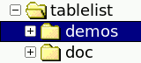

tablelist::tablelist Commandtablelist::tablelist – Create and manipulate
tablelist widgetstablelist::tablelist pathName ?options?
-borderwidth -highlightthickness -setgrid -cursor -relief -xscrollcommand -exportselection -selectbackground -yscrollcommand -highlightbackground -selectborderwidth -highlightcolor -selectforeground
-background -disabledforeground -font -foreground
-acceptchildcommand
command-acceptdropcommand
command-activestyle
frame|none|underline-arrowcolor
color-arrowdisabledcolor
color-arrowstyle
flat5x3|flat5x4|flat6x4|flat7x4|flat7x5|flat7x7|
flat8x4|flat8x5|flat9x5|flat9x6|flat11x6|flat15x8|
flatAngle7x4|flatAngle7x5|flatAngle9x5|flatAngle9x6|
flat1Angle9x7|flatAngle10x6|flatAngle10x7|
photo7x7|sunken8x7|sunken10x9|sunken12x11-autoscan
boolean-collapsecommand
command-colorizecommand
command-columns {width title
?left|right|center? width title
?left|right|center? ...}-columntitles {title
title ...}-customdragsource
boolean-editendcommand
command-editselectedonly
boolean-editstartcommand
command-expandcommand
command-forceeditendcommand
boolean-fullseparators
boolean-height lines-incrarrowtype
up|down-instanttoggle
boolean-labelactivebackground
color-labelactiveforeground
color-labelbackground
color or -labelbg
color-labelborderwidth
screenDistance or -labelbd
screenDistance-labelcommand
command-labelcommand2
command-labeldisabledforeground
color-labelfont
font-labelforeground
color or -labelfg
color-labelheight
lines-labelpady
screenDistance-labelrelief
raised|sunken|flat|ridge|solid|groove-listvariable
variable-movablecolumns
boolean-movablerows
boolean-movecolumncursor
cursor-movecursor
cursor-populatecommand
command-protecttitlecolumns
boolean-resizablecolumns
boolean-resizecursor
cursor-selectmode
single|browse|multiple|extended-selecttype
row|cell-setfocus
boolean-showarrow
boolean-showeditcursor
boolean-showhorizseparator
boolean-showlabels
boolean-showseparators
boolean-snipstring
string-sortcommand
command-spacing
screenDistance-state
normal|disabled-stretch
all|columnIndexList-stripebackground
color or -stripebg
color-stripeforeground
color or -stripefg
color-stripeheight
lines-takefocus
0|1|""|command-targetcolor
color-tight boolean-titlecolumns
number-tooltipaddcommand
command-tooltipdelcommand
command-treecolumn
columnIndex-treestyle
adwaita|ambiance|aqua|baghira|bicolor1|bicolor2|bicolor3|bicolor4|
classic1|classic2|classic3|classic4|dust|dustSand|gtk|klearlooks|
mate|mint|newWave|oxygen1|oxygen2|phase|plain1|plain2|plain3|plain4|
plastik|plastique|radiance|ubuntu|ubuntu2|vistaAero|vistaClassic|
win7Aero|win7Classic|winnative|winxpBlue|winxpOlive|winxpSilver|yuyo-width characters-align
left|right|center-background
color or -bg
color-changesnipside
boolean-changetitlesnipside
boolean-editable
boolean-editwindow
name-font font-foreground
color or -fg
color-formatcommand
command-hide boolean-labelalign
left|right|center-labelbackground
color or -labelbg
color-labelborderwidth
screenDistance or -labelbd
screenDistance-labelcommand
command-labelcommand2
command-labelfont
font-labelforeground
color or -labelfg
color-labelheight
lines-labelimage
image-labelpady
screenDistance-labelrelief
raised|sunken|flat|ridge|solid|groove-maxwidth
width-name name-resizable
boolean-selectbackground
color-selectforeground
color-showarrow
boolean-showlinenumbers
boolean-sortcommand
command-sortmode
ascii|asciinocase|command|dictionary|integer|real-stretchable
boolean-stripebackground
color-stripeforeground
color-text list-title title-valign
center|top|bottom-width width-wrap boolean-background
color or -bg
color-font font-foreground
color or -fg
color-hide boolean-name name-selectable
boolean-selectbackground
color-selectforeground
color-text list-background
color or -bg
color-editable
boolean-editwindow
name-font font-foreground
color or -fg
color-image image-selectbackground
color-selectforeground
color-stretchwindow
boolean-text text-valign
center|top|bottom-window
command-windowdestroy
command-windowupdate
commandnumber knumber active anchor end last top bottom @x,y name
root number knumber active anchor end last top bottom @x,y name
number active anchor end last left right @x,y name
row,col active anchor end last @x,y
row: number knumber active anchor end last top bottom name
col: number active anchor end last left right name
pathName activate
indexpathName activatecell
cellIndexpathName applysorting
itemListpathName attrib ?name?
?value name value ...?pathName bbox
indexpathName bodypathpathName bodytagpathName cancelededitingpathName canceleditingpathName cellattrib
cellIndex ?name? ?value name value
...?pathName cellbbox
cellIndexpathName cellcget
cellIndex optionpathName cellconfigure
cellIndex ?option? ?value option value
...?pathName cellindex
cellIndexpathName cellselection
option args
pathName cellselection anchor
cellIndexpathName cellselection clear
firstCell lastCellpathName cellselection clear
cellIndexListpathName cellselection includes
cellIndexpathName cellselection set
firstCell lastCellpathName cellselection set
cellIndexListpathName cget
optionpathName childcount
nodeIndexpathName childindex
indexpathName childkeys
nodeIndexpathName collapse
index ?-fully|-partly?pathName collapseall
?-fully|-partly?pathName columnattrib
columnIndex ?name? ?value name value
...?pathName columncget
columnIndex optionpathName columnconfigure columnIndex
?option? ?value option value ...?pathName columncountpathName columnindex
columnIndexpathName columnwidth
columnIndex
?-requested|-stretched|-total?pathName configcelllist {cellIndex option
value cellIndex option value ...}pathName configcells
?cellIndex option value cellIndex option
value ...?pathName configcolumnlist {columnIndex
option value columnIndex option value
...}pathName configcolumns
?columnIndex option value columnIndex
option value ...?pathName configrowlist
{index option value index option
value ...}pathName configrows
?index option value index option
value ...?pathName configure
?option? ?value option value ...?pathName containing
ypathName containingcell x ypathName containingcolumn xpathName cornerlabelpathpathName cornerpathpathName curcellselection
?-all|-nonhidden|-viewable?pathName curselection
?-all|-nonhidden|-viewable?pathName delete first
lastpathName delete
indexListpathName deletecolumns
firstColumn lastColumnpathName deletecolumns
columnIndexListpathName depth
nodeIndexpathName descendantcount nodeIndexpathName editcell
cellIndexpathName editinfopathName editwinpathpathName editwintagpathName entrypathpathName expand index
?-fully|-partly?pathName expandall
?-fully|-partly?pathName expandedkeyspathName fillcolumn
columnIndex textpathName findcolumnname namepathName findrowname
name ?-descend? ?-parent nodeIndex?pathName finisheditingpathName formatinfopathName get first
lastpathName get
indexListpathName getcells
firstCell lastCellpathName getcells
cellIndexListpathName getcolumns
firstColumn lastColumnpathName getcolumns
columnIndexListpathName getformatted
first lastpathName getformatted
indexListpathName getformattedcells firstCell
lastCellpathName getformattedcells
cellIndexListpathName getformattedcolumns firstColumn
lastColumnpathName getformattedcolumns
columnIndexListpathName getfullkeys
first lastpathName getfullkeys
indexListpathName getkeys
first lastpathName getkeys
indexListpathName hasattrib
namepathName hascellattrib
cellIndex namepathName hascolumnattrib columnIndex
namepathName hasrowattrib
index namepathName hidetargetmarkpathName imagelabelpath cellIndexpathName index
indexpathName insert index
?item item ...?pathName insertchildlist parentNodeIndex
childIndex itemListpathName insertchild(ren) parentNodeIndex
childIndex ?item item ...?pathName insertcolumnlist columnIndex
{width title ?left|right|center?
width title ?left|right|center?
...}pathName insertcolumns
columnIndex ?width title
?left|right|center? width title
?left|right|center? ...?pathName insertlist
index itemListpathName iselemsnipped
cellIndex fullTextNamepathName isexpanded
indexpathName istitlesnipped columnIndex
fullTextNamepathName isviewable
indexpathName itemlistvarpathName labelpath
columnIndexpathName labelspathName labeltagpathName move
sourceIndex targetIndexpathName move
sourceIndex targetParentNodeIndex
targetChildIndexpathName movecolumn
sourceColumn targetColumnpathName nearest
ypathName nearestcell
x ypathName nearestcolumn
xpathName noderow
parentNodeIndex childIndexpathName parentkey
nodeIndexpathName refreshsorting
?parentNodeIndex?pathName rejectinputpathName resetsortinfopathName rowattrib
index ?name? ?value name value
...?pathName rowcget
index optionpathName rowconfigure
index ?option? ?value option value
...?pathName scan
mark|dragto x ypathName searchcolumn
columnIndex pattern ?options?pathName see
indexpathName seecell
cellIndexpathName seecolumn
columnIndexpathName selection
option args
pathName selection anchor
indexpathName selection clear first
lastpathName selection clear
indexListpathName selection includes
indexpathName selection set first
lastpathName selection set
indexListpathName separatorpath
?columnIndex?pathName separatorspathName showtargetmark before|inside
indexpathName sizepathName sort
?-increasing|-decreasing?pathName sortbycolumn
columnIndex ?-increasing|-decreasing?pathName sortbycolumnlist columnIndexList
?sortOrderList?pathName sortcolumnpathName sortcolumnlistpathName sortorderpathName sortorderlistpathName targetmarkpathpathName targetmarkpos
y ?-any|-horizontal|-vertical?pathName togglecolumnhide firstColumn
lastColumnpathName togglecolumnhide
columnIndexListpathName togglerowhide
first lastpathName togglerowhide
indexListpathName toplevelkey
indexpathName unsetattrib
namepathName unsetcellattrib cellIndex
namepathName unsetcolumnattrib columnIndex
namepathName unsetrowattrib index
namepathName viewablerowcount ?first
last?pathName windowpath
cellIndexpathName xview
args
pathName xviewpathName xview unitspathName xview moveto
fractionpathName xview scroll number
units|pagespathName yview
args
pathName yviewpathName yview unitspathName yview moveto
fractionpathName yview scroll number
units|pagestablelist::tablelist – Create and manipulate
tablelist widgetstablelist::tablelist pathName ?options?
-borderwidth -highlightthickness -setgrid -cursor -relief -xscrollcommand -exportselection -selectbackground -yscrollcommand -highlightbackground -selectborderwidth -highlightcolor -selectforeground
-highlightbackground,
-highlightcolor, and
-highlightthickness options are only supported by the
Tablelist package, but not by Tablelist_tile. When using the package
Tablelist_tile, the options -selectbackground,
-selectborderwidth, and
-selectforeground have theme-specific default
values.-background -disabledforeground -font -foreground
| Command-Line Name: | -acceptchildcommand |
| Database Name: | acceptChildCommand |
| Database Class: | AcceptChildCommand |
Specifies a Tcl command used to decide whether a given tablelist node may accept a specified item being moved interactively as a child. The specified command is automatically concatenated with the name of the tablelist widget, the node index of the would-be new parent node, and the row index of the dragged item, the resulting script is evaluated in the global scope, and the return value (which must be a boolean) will determine whether to allow to move the source item to the current mouse position as a child of the given parent node.
For example, in the case of a tablelist widget used as a file manager, in which the top-level items represent volumes mounted on the system, the command specified by this option might look like in the (pseudo-)code below:
proc acceptChildCmd {tbl targetParentNodeIdx sourceRow} { if {[string compare $targetParentNodeIdx "root"] == 0} { # Allow only volumes as top-level items return [expr {[$tbl depth $sourceRow] == 1}] } else { # Allow only directories as parent items return [$targetParentNodeIdx represents a directory] } }For technical reasons (the use of the
-elidetext widget tag option for collapsing a row), this option is not supported for Tk versions earlier than 8.3.
| Command-Line Name: | -acceptdropcommand |
| Database Name: | acceptDropCommand |
| Database Class: | AcceptDropCommand |
Specifies a Tcl command used to decide whether a given tablelist row may accept a specified item being moved interactively to be dropped as a sibling just before that row. The specified command is automatically concatenated with the name of the tablelist widget, the row index of the would-be new target, and the row index of the dragged item, the resulting script is evaluated in the global scope, and the return value (which must be a boolean) will determine whether to allow to move the source item to the current mouse position, just before the given row.
For example, to make sure that the position of the last row of a tablelist widget won't be affected by the interactive row move operation, the command specified by this option might look like in the code below:
proc acceptDropCmd {tbl targetRow sourceRow} { set rowCount [[$tbl size] return [expr {$sourceRow != $rowCount - 1 && $targetRow < $rowCount}] }
| Command-Line Name: | -activestyle |
| Database Name: | activeStyle |
| Database Class: | ActiveStyle |
Specifies how to diplay the active item or element (depending on the value of the
-selecttypeconfiguration option) when the tablelist has the keyboard focus. The allowed values areframe,none, andunderline. The default valueframeshows a thin frame around the active item or element, which in most cases looks nice. It looks less pretty when applied to the active item if the background color of some of its cells was changed by using thecolumnconfigureorcellconfigurewidget command and no column separators are shown. The valuenonespecifies that no special indication of the active item or element is to be performed. The valueunderlineproduces the same visual effect as in the case of the Tk core listbox.
| Command-Line Name: | -arrowcolor |
| Database Name: | arrowColor |
| Database Class: | ArrowColor |
Specifies the color to use for the up- or down-arrow placed into a column label by the
sortbycolumnorsortbycolumnlistsubcommand of the Tcl command associated with the widget. This option is only relevant if the value of the-showarrowoption is true. The default value depends on the windowing system in the Tablelist package and on the current theme in Tablelist_tile. For example, if the windowing system isx11then the default arrow color isblackand the-arrowstyleoption has the default valueflat7x5. The same holds true for some tile themes, likealt,default, andclam. On the windowing systemwin32, the default arrow color is#569bc0for Windows Vista and later,#aca899for Windows XP, and an empty string for older Windows versions, paired with the default arrow styleflat7x4,flat9x5, andsunken8x7, respectively. Finally, for the windowing systemsclassicandaquaon the Macintosh, the default arrow color and style depend on the version of the operating system: Starting with version 10.10 (Yosemite) of Mac OS X, the default arrow color for the windowing systemaquais#404040and the default arrow style isflatAngle7x4. For earlier operating system versions on the Mac, the default values are the arrow color#717171and the arrow styleflat7x7(orphoto7x7, in the presence of PNG support).REMARK: If the arrow color is as empty string then the sort arrow will inherit the background color of the header label in which it is placed. In this case, the arrow style should be set to one of
sunken8x7,sunken10x9, orsunken12x11, which will give rise to sort arrows with 3-D border and sunken relief.
| Command-Line Name: | -arrowdisabledcolor |
| Database Name: | arrowDisabledColor |
| Database Class: | ArrowDisabledColor |
Specifies the color to use for the up- or down-arrow placed into a column label by the
sortbycolumnorsortbycolumnlistsubcommand of the Tcl command associated with the widget when the tablelist'sstateisdisabled. This option is only relevant if the value of the-showarrowoption is true. When the default value of the-arrowcoloroption is an empty string then this is the default for the-arrowdisabledcoloroption, too; otherwise the latter's default value equals the default foreground color of the header labels indisabledstate.
| Command-Line Name: | -arrowstyle |
| Database Name: | arrowStyle |
| Database Class: | ArrowStyle |
Specifies the relief, shape, width, and height of the up- or down-arrow placed into a column label by the
sortbycolumnorsortbycolumnlistsubcommand of the Tcl command associated with the widget. This option is only relevant if the value of the-showarrowoption is true. The currently supported values areflat5x3,flat5x4,flat6x4,flat7x4,flat7x5,flat7x7,flat8x4,flat8x5,flat9x5,flat9x6,flat11x6,flat15x8,flatAngle7x4,flatAngle7x5,flatAngle9x5,flatAngle9x6,flatAngle9x7,flatAngle10x6,flatAngle10x7,photo7x7,sunken8x7,sunken10x9, andsunken12x11, as shown in the picture below. The default value depends on the windowing system in the Tablelist package and on the current theme in Tablelist_tile; see the description of the-arrowcoloroption for details. As mentioned there, the default arrow style on Windows Vista and later isflat7x4. While this is in most cases true, notice that the default chosen by Tablelist can also beflat9x5,flat11x6, orflat15x8(the last two are not shown in the picture below), depending on the display's scaling level.While the sort arrows of the styles
flat*andsunken*are created from bitmaps, the arrow stylephoto7x7uses PNG images that look and behave very close to the native sort arrows on Mac OS X Aqua versions earlier than 10.10 (Yosemite). This arrow style is only supported if the Tk version is either 8.6 (with built-in PNG support), or 8.5 and theimg::pngpackage can be loaded into the interpreter. When supported,photo7x7will be the default value of the-arrowstyleoption in Tablelist_tile with theaquatheme for Mac OS X versions earlier than 10.10 (otherwiseflat7x7will be used as default for these earlier OS X versions). When using this arrow style, the-arrowcolorand-arrowdisabledcoloroptions have no effect, but, due to the transparency information contained in the PNG images, the arrows will automatically adapt their color to the various states of the header labels, just like the native sort arrows.
| Command-Line Name: | -autoscan |
| Database Name: | autoScan |
| Database Class: | AutoScan |
Specifies a boolean value that controls whether to trigger the automatic scrolling when the mouse leaves the tablelist window with button 1 down. The default is
1, meaning that automatic scrolling will be in effect, just like in the case of the Tk listbox widget. However, when using the TkDND package or some other drag & drop implementation, you might want to set this option to0, in order to avoid any conflicts between the drag operation and the automatic scrolling.REMARK: Starting with Tablelist version 5.12, this option has become obsolete, because the default bindings now suppress the above-mentioned automatic scrolling if the tablelist's body component was registered as a drag source for mouse button 1 via the
tkdnd::drag_source registeror the BWidgetDragSite::registercommand, or the tablelist's-customdragsourceoption was set to true.
| Command-Line Name: | -collapsecommand |
| Database Name: | collapseCommand |
| Database Class: | CollapseCommand |
Specifies a Tcl command to be invoked when collapsing a row of a tablelist used as a tree widget (with the aid of the
collapseorcollapseallsubcommand). The specified command is automatically concatenated with the name of the tablelist widget and the row index, and the resulting script is evaluated in the global scope, before hiding the descendants of the row in question.For technical reasons (the use of the
-elidetext widget tag option for collapsing a row), this option is not supported for Tk versions earlier than 8.3.
| Command-Line Name: | -colorizecommand |
| Database Name: | colorizeCommand |
| Database Class: | ColorizeCommand |
Specifies a Tcl command that can be used to change the colors of arbitrary character regions within the cells of the currently visible rows. Whenever the Tablelist package needs to display the various foreground and background colors (including the stripe- and selection-specific ones), it runs over the cells of the rows that are currently visible in the tablelist window and displays the colors by adding appropriate tags to the body text widget areas making up the formatted contents of the cells. After activating the colors for a cell, the Tablelist code invokes the command specified as the value of this configuration option (provided that it is a nonempty string), in the global scope and with the following arguments specific to the cell being processed:
- the path name of the tablelist widget;
- the path name of the tablelist's body component;
- the full key of the item containing the element being processed;
- the numerical row index of that item;
- the numerical index of the cell's column;
- the text index (of the form
line.char) of the first\tcharacter delimiting the cell in the underlying text widget;- the text index (of the form
line.char) of the second\tcharacter delimiting the cell in the underlying text widget;- the boolean value
0or1indicating whether the cell being processed is contained in a stripe (see, e.g., the description of the-stripebackgroundoption);- the boolean value
0or1indicating whether the cell being processed is currently selected.From the above it follows that the value of this configuration option will typically be the name of a procedure like in the following example:
proc myColorizeCmd {tbl body key row col tabIdx1 tabIdx2 inStripe selected} { ... }REMARK: To change the colors of some parts of a cell's displayed content, the command specified as the value of this configuration option will have to make use of text widget tags having the desired background and/or foreground colors. Besides
-backgroundand-foreground, the command may also use a few other tag configuration options, like-overstrikeand-underline. On the other hand, be aware that the use of some other tag configuration options (particularly-elideand-font) can cause conflicts with the way Tablelist renders the elements, thus giving rise to various layout problems within the body of your tablelist widget!
| Command-Line Name: | -columns |
| Database Name: | columns |
| Database Class: | Columns |
Specifies the widths, titles, and alignments of the columns. The option's value must be a list of the form
width title ?alignment? width title ?alignment? ...Each
widthmust be a number. A positive value specifies the column's width in average-size characters of the widget's font. Ifwidthis negative, its absolute value is interpreted as a column width in pixels. Finally, a value of zero specifies that the column's width is to be made just large enough to hold all the elements in the column, including its header (but no larger than the maximum width indicated by the-maxwidthcolumn configuration option). In all three cases, the effective column width will be somewhat greater because of the margins created automatically to the left and right of the column.Each
titlespecifies the text to be displayed in the column's header, and may optionally be followed in the next list element by analignment, which specifies how to align the elements of the column. Eachalignmentmust be one ofleft,right, orcenter. The default isleft. Thealignmentalso refers to the column's title as long as the-labelalignoption hasn't been specified for that column, or if its value is an empty string.The default value of this option is an empty list, specifying that initially the widget has no columns.
REMARK: Columns whose width was specified as zero are called dynamic-width columns. In general, they are more user-friendly than their static-width counterparts, being that their widths are automatically adapted to their contents. On the other hand, the static-width columns perform significantly better on item insertion and sorting than the dynamic-width ones, due to some optimizations introduced in Tablelist version 5.6. (Prior to that release, the above-mentioned operations were faster with dynamic-width columns than with static-width ones.)
| Command-Line Name: | -columntitles |
| Database Name: | columnTitles |
| Database Class: | ColumnTitles |
This option provides a simplified form of specifying dynamic-width, left-aligned tablelist columns. Its value is viewed as a list of column titles. The default is an empty list.
In the simplest case that no columns have been specified yet, setting this option to the value given by the list
title title ...is equivalent to setting the
-columnsoption to the value given by the list0 title left 0 title left ...If the columns have already been specified then this option updates their titles (as many of them as possible) and, if the number of elements of its value is greater than the number of columns then it uses the remaining elements as titles of additional dynamic-width, left-aligned columns. For example, if the widget has 3 columns and the option's value is a list of length 5 then the option will update the titles of the 3 columns and will append 2 new dynamic-width, left-aligned columns having as titles the last 2 elements of the list. If the widget has 3 columns and the option specifies just 2 texts then it will update the titles of the first 2 columns only.
| Command-Line Name: | -customdragsource |
| Database Name: | customDragSource |
| Database Class: | CustomDragSource |
Specifies a boolean value that indicates whether the tablelist widget is a drag source for some drag & drop implementation other than TkDND and the drag & drop framework included in BWidget. If true then the default bindings will perform an automatic drag-friendly handling of the selection and will suppress the automatic scrolling when the mouse leaves the tablelist window with button 1 down. The default is
0.
| Command-Line Name: | -editendcommand |
| Database Name: | editEndCommand |
| Database Class: | EditEndCommand |
Specifies a Tcl command to be invoked on normal termination of the interactive editing of a cell's contents if the final text of the temporary embedded widget used for the editing is different from its initial one. The command is automatically concatenated with the name of the tablelist widget, the cell's row and column indices, as well as the final contents of the edit window, the resulting script is evaluated in the global scope, and the return value becomes the cell's new contents after destroying the temporary embedded widget. The main purpose of this script is to perform a final validation of the edit window's contents. See the description of the
-forceeditendcommandoption for more about the invocation of the command mentioned above, as well as the INTERACTIVE CELL EDITING section for details on the editing process.
| Command-Line Name: | -editselectedonly |
| Database Name: | editSelectedOnly |
| Database Class: | EditSelectedOnly |
Specifies a boolean value that controls whether to start the interactive cell editing when mouse button 1 is pressed in an editable cell. If this value is true then the editing will only be started if the cell has previously been selected (interactively or programmatically). In this case, a first left-click will usually just select the cell (or its row, depending on the value of the
-selecttypeoption), and a second mouse click will start the editing session. The default is0, meaning that the editing will be started regardless of whether the cell is selected or not.
| Command-Line Name: | -editstartcommand |
| Database Name: | editStartCommand |
| Database Class: | EditStartCommand |
Specifies a Tcl command to be invoked when the interactive editing of a cell's contents is started. The command is automatically concatenated with the name of the tablelist widget, the cell's row and column indices, as well as the text displayed in the cell, the resulting script is evaluated in the global scope, and the return value becomes the initial contents of the temporary embedded widget used for the editing. The main purpose of this script is to define validations for the edit window's contents. See the INTERACTIVE CELL EDITING section for details on the editing process.
| Command-Line Name: | -expandcommand |
| Database Name: | expandCommand |
| Database Class: | ExpandCommand |
Specifies a Tcl command to be invoked when expanding a row of a tablelist used as a tree widget (with the aid of the
expandorexpandallsubcommand). The specified command is automatically concatenated with the name of the tablelist widget and the row index, and the resulting script is evaluated in the global scope, before displaying the children of the row in question.For technical reasons (the use of the
-elidetext widget tag option for collapsing a row), this option is not supported for Tk versions earlier than 8.3.REMARK: It is common practice to use the command specified as the value of this option to insert the children of the row that is about to be expanded, if it has no children yet. For example, the Directory Viewer demo script uses the command implemented as follows:
proc expandCmd {tbl row} { if {[$tbl childcount $row] == 0} { # Get the name of the directory whose leaf name is # displayed in the first cell of the specified row set dir [$tbl rowattrib $row pathName] # Display the contents of the directory $dir # as child items of the one identified by $row putContents $dir $tbl $row } # The rest is just eye candy: if {[$tbl childcount $row] != 0} { # Update the image displayed in the row's first cell $tbl cellconfigure $row,0 -image openFolderImg } }
| Command-Line Name: | -forceeditendcommand |
| Database Name: | forceEditEndCommand |
| Database Class: | ForceEditEndCommand |
Specifies a boolean value that controls the invocation of the command given by the the
-editendcommandoption. If this value is true then the command will be invoked on normal termination of the editing process even if the final text of the temporary embedded widget used for the editing equals its initial one, and will also be invoked when the interactive cell editing is canceled (in the latter case, the text passed to it as last argument will be the cell's original contents, not its final one). The default value of this option is0, meaning that the command will only be invoked on normal termination of the editing process, if the final text of the temporary embedded widget is different from its initial one. See the INTERACTIVE CELL EDITING section for details on the editing process.If the option's value is true and no value for the
-editendcommandoption was specified, then on normal termination of the editing process the cell's new contents will be set to the text contained in the edit window, even if it has not been changed interactively (but might have been returned by the command given by the the-editstartcommandoption).Setting this option to true enables you to execute an arbitrary action whenever the interactive cell editing is finished. Just binding a script to the
<Destroy>event for the temporary embedded widget used for the editing won't work, because that widget might be destroyed and recreated automatically under various circumstances. Alternately, you can use the<<TablelistCellUpdated>>and<<TablelistCellRestored>>virtual events, generated by thefinisheditingandcanceleditingsubcommands, respectively.
| Command-Line Name: | -fullseparators |
| Database Name: | fullSeparators |
| Database Class: | FullSeparators |
Specifies a boolean value that controls whether the separators (if any) shall extend all of the way to the bottom of the tablelist's body. The default is
0, meaning that the height of the separators will be adjusted to the widget's content, i.e., they won't extend to the bottom of the tablelist's body if there is free vertical space left below the widget's last row.
| Command-Line Name: | -height |
| Database Name: | height |
| Database Class: | Height |
Specifies the desired height for the window, in units of characters in the font given by the
-fontoption. This is at the same time the desired height in lines, provided that no column-, row-, or cell-specific fonts, multi-line elements, or embedded images or windows will make the height of any of the rows different from the one corresponding to the above-mentioned font. With this restriction, if the option's value is zero or less, then the window's height is made just large enough to hold all the items in the tablelist widget.
| Command-Line Name: | -incrarrowtype |
| Database Name: | incrArrowType |
| Database Class: | IncrArrowType |
Specifies the type of the arrow placed into a column label when sorting the items based on that column in increasing order, with the aid of the
sortbycolumnorsortbycolumnlistsubcommand of the Tcl command associated with the widget. The value of this option must be one ofupordown. The default isup. This option is only relevant if the value of the-showarrowoption is true.
| Command-Line Name: | -instanttoggle |
| Database Name: | instantToggle |
| Database Class: | InstantToggle |
Specifies a boolean value that controls whether the interactive cell editing with the aid of a Tk or tile checkbutton widget, if started with the left mouse button, will be finished immediately after automatically toggling the checked state of the temporary embedded checkbutton. The default value is
0, meaning that a mouse click into the cell will only start the editing session (and automatically toggle the checkbutton's checked state), but not also finish it.
| Command-Line Name: | -labelactivebackground |
| Database Name: | labelActiveBackground |
| Database Class: | Foreground |
Specifies the
-activebackgroundoption for the header labels, i.e., the background color to use when the mouse cursor is positioned over a header label and the value oftk_strictMotifis false. This option is only defined in the Tablelist package if the Tk version being used supports the-activebackgroundoption for label widgets. This is checked by Tablelist at initialization time, and will normally be the case for Tk versions 8.3.2 or higher. On the other hand, the Tablelist_tile package doesn't support the-labelactivebackgroundoption.
| Command-Line Name: | -labelactiveforeground |
| Database Name: | labelActiveForeground |
| Database Class: | Background |
Specifies the
-activeforegroundoption for the header labels, i.e., the foreground color to use when the mouse cursor is positioned over a header label and the value oftk_strictMotifis false. This option is only defined in the Tablelist package if the Tk version being used supports the-activeforegroundoption for label widgets. This is checked by Tablelist at initialization time, and will normally be the case for Tk versions 8.3.2 or higher. On the other hand, the Tablelist_tile package doesn't support the-labelactiveforegroundoption.
| Command-Line Name: | -labelbackground or
-labelbg |
| Database Name: | labelBackground |
| Database Class: | Background |
Specifies the
-backgroundoption for the header labels. This option is only supported by the Tablelist package, but not by Tablelist_tile.
| Command-Line Name: | -labelborderwidth or
-labelbd |
| Database Name: | labelBorderWidth |
| Database Class: | BorderWidth |
Specifies the
-borderwidthoption for the header labels. This option is different from the standard-borderwidthoption defined for the tablelist widget itself. In the package Tablelist_tile this option has a theme-specific default value.REMARK: Please take into account that in some themes, setting this option to a value other than the default might be ignored by tile and thus could cause alignment problems. This is because the border of tile widgets is drawn with theme-specific methods, which will not always produce the results known from Tk widgets.
| Command-Line Name: | -labelcommand |
| Database Name: | labelCommand |
| Database Class: | LabelCommand |
Specifies the Tcl command to be invoked when mouse button 1 is pressed over one of the header labels and later released over the same label. When the
<ButtonRelease-1>event occurs, the command is automatically concatenated with the name of the tablelist widget and the column index of the respective label, and the resulting script is evaluated in the global scope. If the tablelist'sstateisdisabledthen this action will not take place. The most common value of this option istablelist::sortByColumn; this command sorts the items based on the column whose index was passed to it as second argument.
| Command-Line Name: | -labelcommand2 |
| Database Name: | labelCommand2 |
| Database Class: | LabelCommand2 |
Specifies the Tcl command to be invoked when mouse button 1 is pressed together with the
Shiftkey over one of the header labels and later released over the same label. When the<ButtonRelease-1>event occurs, the command is automatically concatenated with the name of the tablelist widget and the column index of the respective label, and the resulting script is evaluated in the global scope. If the tablelist'sstateisdisabledthen this action will not take place. The most common value of this option istablelist::addToSortColumns; this command adds the column index passed to it as second argument to the list of sort columns and sorts the items based on the columns indicated by the modified list.
| Command-Line Name: | -labeldisabledforeground |
| Database Name: | labelDisabledForeground |
| Database Class: | DisabledForeground |
Specifies the
-disabledforegroundoption for the header labels, i.e., the foreground color to use for the labels when the tablelist'sstateisdisabled. This option is only defined in the Tablelist package if the Tk version being used supports the-disabledforegroundoption for label widgets. This is checked by Tablelist at initialization time, and will normally be the case for Tk versions 8.3.1 or higher. On the other hand, the Tablelist_tile package doesn't support the-labeldisabledforegroundoption.
| Command-Line Name: | -labelfont |
| Database Name: | labelFont |
| Database Class: | Font |
Specifies the
-fontoption for the header labels. In the package Tablelist_tile this option has a theme-specific default value.
| Command-Line Name: | -labelforeground or
-labelfg |
| Database Name: | labelForeground |
| Database Class: | Foreground |
Specifies the
-foregroundoption for the header labels. In the package Tablelist_tile this option has a theme-specific default value.
| Command-Line Name: | -labelheight |
| Database Name: | labelHeight |
| Database Class: | Height |
Specifies the
-heightoption for the header labels. This option is only supported by the Tablelist package, but not by Tablelist_tile.
| Command-Line Name: | -labelpady |
| Database Name: | labelPadY |
| Database Class: | Pad |
In the Tablelist package this option specifies the
-padyconfiguration option for the header labels. In the Tablelist_tile package the value of the-labelpadyoption is mapped to the corresponding components of the value of the-paddingconfiguration option of the header labels, and the-labelpadyoption has a theme-specific default value.
| Command-Line Name: | -labelrelief |
| Database Name: | labelRelief |
| Database Class: | Relief |
Specifies the
-reliefoption for the header labels. This option is different from the standard-reliefoption defined for the tablelist widget itself. The default value israised.
| Command-Line Name: | -listvariable |
| Database Name: | listVariable |
| Database Class: | Variable |
Specifies the name of a variable. The value of the variable is a list to be displayed inside the widget; if the variable value changes then the widget will automatically update itself to reflect the new value. The value of the variable must be a valid list. Each list element corresponds to a row within the widget, and must be a valid list itself; its elements correspond to the cells within the respective row. Attempts to assign a variable whose value does not fulfil these conditions to
-listvariablewill cause an error. Attempts to unset a variable in use as a-listvariablewill fail but will not generate an error.REMARK 1: For increased efficiency, updating the widget to reflect a changed value of the variable specified with this option is, whenever possible, done at idle time (i.e., when there are no events to process). On the other hand, most tablelist subcommands make it necessary to perform an immediate update of the widget's internal list according to the value of this variable, before executing the subcommand in question. Doing this repeatedly can become quite inefficient. To avoid performance problems, you should always try to separate the operations that build up the value of the variable specified by this option from other commands. For example, instead of
tablelist::tablelist .tbl ... -listvariable var set var {} for {set row 0} {$row < 1000} {incr row} { lappend var ... .tbl cellconfigure $row,3 -image ... }you should write
tablelist::tablelist .tbl ... -listvariable var set var {} for {set row 0} {$row < 1000} {incr row} { lappend var ... } for {set row 0} {$row < 1000} {incr row} { .tbl cellconfigure $row,3 -image ... }The first method above is quite inefficient, because it requires 1000 updates of the widget's internal list. The second method performs incomparably faster, because it needs only one synchronization (at the beginning of the second loop).
REMARK 2: It is not recommended to set this option for a tablelist used as a tree widget, because adding new items to the list specified as its value will result in inserting those list elements into the widget without respecting the tree's internal structure. There is no problem if you access the variable for reading only, but for that purpose it is more efficient to use the
itemlistvarsubcommand rather than the-listvariableoption.
| Command-Line Name: | -movablecolumns |
| Database Name: | movableColumns |
| Database Class: | MovableColumns |
Specifies a boolean value that determines whether the columns can be moved interactively. See the DEFAULT AND INDIVIDUAL BINDINGS FOR THE HEADER LABELS section below for information on moving a column interactively. The default value is
0.
| Command-Line Name: | -movablerows |
| Database Name: | movableRows |
| Database Class: | MovableRows |
Specifies a boolean value that determines whether the rows can be moved interactively. See the DEFAULT AND INDIVIDUAL BINDINGS FOR THE TABLELIST BODY section below for information on moving a row interactively. The default value is
0.
| Command-Line Name: | -movecolumncursor |
| Database Name: | moveColumnCursor |
| Database Class: | MoveColumnCursor |
Specifies the mouse cursor to be used when moving a column interactively. The default value is
iconon the windowing systemsx11andwin32, and the native cursorclosedhandon the Macintosh windowing systemsclassicandaqua.
| Command-Line Name: | -movecursor |
| Database Name: | moveCursor |
| Database Class: | MoveCursor |
Specifies the mouse cursor to be used when moving a row interactively. The default value is
hand2on the windowing systemsx11andwin32, and the native cursorpointinghandon the Macintosh windowing systemsclassicandaqua.
| Command-Line Name: | -populatecommand |
| Database Name: | populateCommand |
| Database Class: | PopulateCommand |
Specifies a Tcl command to be invoked by the
searchcolumnsubcommand before examining the children (or descendants, when used with the-descendoption) of a tablelist row whose children have not been inserted yet. The specified command is automatically concatenated with the name of the tablelist widget and the row index, and the resulting script is evaluated in the global scope. It is expected that this script will insert the children of the row in question, without expanding the node or changing its appearance in any other way.For technical reasons (the use of the
-elidetext widget tag option for collapsing a row), this option is not supported for Tk versions earlier than 8.3.REMARK: There are many similarities between this option and
-expandcommand. Both options are used in the first place to insert children on demand. The main differences between them are as follows:
- The command specified by the
-populatecommandoption is only invoked for rows whose children have not been inserted yet, while the one specified by-expandcommandis always invoked before expanding a row, regardless of whether the children of that row are already present in the widget or not.- The command specified by the
-expandcommandoption may perform visual changes on the node in question, while the role of the one specified by-populatecommandis restricted to inserting the children, without altering the node's appearance in any way.A logical consequence of the above is that the value of
-populatecommandis usually just a stripped-down version of the command specified by the-expandcommandoption. For example, the Directory Viewer demo script might use a command implemented as follows:proc populateCmd {tbl row} { # Get the name of the directory whose leaf name is # displayed in the first cell of the specified row set dir [$tbl rowattrib $row pathName] # Display the contents of the directory $dir # as child items of the one identified by $row putContents $dir $tbl $row }Moreover, the
-expandcommandoption can be set to a command that invokes the one specified by the-populatecommandoption:proc expandCmd {tbl row} { if {[$tbl childcount $row] == 0} { populateCmd $tbl $row } # The rest is just eye candy: if {[$tbl childcount $row] != 0} { # Update the image displayed in the row's first cell $tbl cellconfigure $row,0 -image openFolderImg } }
| Command-Line Name: | -protecttitlecolumns |
| Database Name: | protectTitleColumns |
| Database Class: | ProtectTitleColumns |
Specifies a boolean value that determines whether the boundary of the title column area shall be protected from being crossed when moving a column interactively. See the DEFAULT AND INDIVIDUAL BINDINGS FOR THE HEADER LABELS section below for information on moving a column interactively. The default value is
0, specifying that non-title columns can be moved into the title column area and vice-versa.
| Command-Line Name: | -resizablecolumns |
| Database Name: | resizableColumns |
| Database Class: | ResizableColumns |
Specifies a boolean value that determines whether the columns can be resized interactively. See the DEFAULT AND INDIVIDUAL BINDINGS FOR THE HEADER LABELS section below for information on interactive column resizing. The default value is
1.
| Command-Line Name: | -resizecursor |
| Database Name: | resizeCursor |
| Database Class: | ResizeCursor |
Specifies the mouse cursor to be used during interactive column resizing. The default value is
sb_h_double_arrowon the windowing systemsx11andwin32, and the native cursorresizeleftrighton the Macintosh windowing systemsclassicandaqua.
| Command-Line Name: | -selectmode |
| Database Name: | selectMode |
| Database Class: | SelectMode |
Specifies one of several styles for manipulating the selection. The value of the option may be arbitrary, but the default bindings expect it to be either
single,browse,multiple, orextended. The default value isbrowse.
| Command-Line Name: | -selecttype |
| Database Name: | selectType |
| Database Class: | SelectType |
Specifies one of two selection types for the tablelist widget:
roworcell. If the selection type isrowthen the default bindings will select and deselect entire items, and the whole row having the location cursor will be displayed as active when the tablelist has the keyboard focus. If the selection type iscellthen the default bindings will select and deselect individual elements, and the single cell having the location cursor will be displayed as active when the tablelist has the keyboard focus. The default value isrow.
| Command-Line Name: | -setfocus |
| Database Name: | setFocus |
| Database Class: | SetFocus |
Specifies a boolean value that determines whether a click with the left mouse button anywhere into the tablelist's body, including the separators and the embedded images (more precisely, any descendants of the tablelist widget having the binding tag
TablelistBody) should set the focus to the body of the tablelist widget if the latter'sstateisnormal. The default value is1.
| Command-Line Name: | -showarrow |
| Database Name: | showArrow |
| Database Class: | ShowArrow |
Specifies a boolean value that determines whether the
sortbycolumnandsortbycolumnlistsubcommands of the Tcl command associated with the widget should place an arrow indicating the sort order into the header label(s) of the column(s) specified by their first argument. The default value is1.
| Command-Line Name: | -showeditcursor |
| Database Name: | showEditCursor |
| Database Class: | ShowEditCursor |
Specifies a boolean value indicating whether the mouse cursor should change automatically to one having the shape of a pencil whenever a click with mouse button 1 would start an editing session. The default value is
1.REMARK: On X11 and Mac OS X Aqua, the cursor set by Tablelist when a mouse click would start the interactive cell editing, is Tk's built-in cursor
pencil. Since on Windows this cursor is ugly and not really usable, the edit cursor shown by Tablelist on this platform will be the one loaded from the filepencil.cur, located in thescriptssubdirectory of the Tablelist installation directory. If the application was started as a starpack containing the Tablelist package, then the edit cursor will be loaded from a copy of this file, created automatically by Tablelist in the user'sTempdirectory.The file
pencil.curis a copy of the fileUbuntu Handwriting.cur, downloaded from the addresshttp://www.rw-designer.com/cursor-detail/46745
| Command-Line Name: | -showhorizseparator |
| Database Name: | showHorizSeparator |
| Database Class: | ShowHorizSeparator |
Specifies a boolean value that controls whether to place a horizontal separator just below the last row if the value of the
-showseparatorsoption is true, that of the-fullseparatorsoption is false, and there is free space left between the last row and the bottom of the tablelist window. The default value is1.
| Command-Line Name: | -showlabels |
| Database Name: | showLabels |
| Database Class: | ShowLabels |
Specifies a boolean value that determines whether the header labels are to be shown or not. The default value is
1.
| Command-Line Name: | -showseparators |
| Database Name: | showSeparators |
| Database Class: | ShowSeparators |
Specifies a boolean value that determines whether the columns are to be separated with borders. The default value is
0. The separators are implemented as thin frames with sunken relief in the package Tablelist, and as tile separator widgets in the package Tablelist_tile. They are attached to the right edges of the header labels, and are only created if the value of this option is true. In this case, a horizontal separator will also be created and placed just below the last row, provided that the value of the-showhorizseparatoroption is true, that of the-fullseparatorsoption is false, and there is free space left between the last row and the bottom of the tablelist window.REMARK: Tablelist doesn't support horizontal separators (except for the one mentioned above), but a nice distinguishing effect for the rows can be achieved with the aid of the
-stripebackgroundoption discussed below.
| Command-Line Name: | -snipstring |
| Database Name: | snipString |
| Database Class: | SnipString |
Specifies the string to be used as snip indicator when displaying the elements that don't fit into their cells. The default is an ellipsis (
"...").
| Command-Line Name: | -sortcommand |
| Database Name: | sortCommand |
| Database Class: | SortCommand |
Specifies a command to be used for the comparison of the items when invoking the
sortsubcommand of the Tcl command associated with the tablelist widget. To compare two items (viewed as lists of cell contents within one row each) during thesortoperation, the command is automatically concatenated with the two items and the resulting script is evaluated. The script should return an integer less than, equal to, or greater than zero if the first item is to be considered less than, equal to, or greater than the second, respectively.
| Command-Line Name: | -spacing |
| Database Name: | spacing |
| Database Class: | Spacing |
Specifies additional space to provide above and below each row of the widget. The option's value may have any of the standard forms for screen distances. It defaults to
0. See also the-tightoption.
| Command-Line Name: | -state |
| Database Name: | state |
| Database Class: | State |
Specifies one of two states for the tablelist widget:
normalordisabled. If the widget is disabled then neither items nor columns may be inserted, deleted, updated, or moved, the items, header labels, and the up- or down-arrow are drawn in the-disabledforeground,-labeldisabledforeground, and-arrowdisabledcolorcolor, respectively, the selection cannot be modified and is not shown (although the selection information is retained), the header labels are completely insensitive, and no interactive cell editing can be performed. In addition, in disabled state any color options specified at column, row, or cell level will be ignored.
| Command-Line Name: | -stretch |
| Database Name: | stretch |
| Database Class: | Stretch |
Specifies the columns to be stretched in order to fill the tablelist window if necessary. The option's value may be
allor a list of column indices in any of the forms described in the COLUMN INDICES section below. In the second case, the specified column indices are replaced with their numerical equivalents, except forendandlast, which are viewed as dynamic column indices whose numerical equivalent (i.e., the index of the tablelist's last column) might change during program execution and therefore will be recomputed every time the columns are stretched. The list will be updated automatically whenever columns are inserted, deleted, or moved. The number of pixels by which a column is stretched is proportional to its width in pixels. The default value of this option is an empty list, meaning that no column will be stretched to eliminate the blank space that might appear at the right of the table. (Note that the blank space following the header labels is filled with a dummy, insensitive label having the same background, borderwidth, and relief as the "normal" header labels.) This option is ignored if the value of the-widthconfiguration option is zero or less.
| Command-Line Name: | -stripebackground or
-stripebg |
| Database Name: | stripeBackground |
| Database Class: | Background |
Specifies the background color to use when displaying the items belonging to a stripe. Each stripe is composed of the same number
stripeHeightof consecutive viewable items, according to the value of the-stripeheightconfiguration option. The firststripeHeightviewable items are "normal" ones; they are followed by a stripe composed of the nextstripeHeightviewable items, which in turn is followed by the same number of "normal" viewable items, and so on. In the Tablelist package and in most themes supported by Tablelist_tile, the default value is an empty string, indicating that the stripes will inherit the background color specified by the-backgroundconfiguration option. When using Tablelist_tile with thetileqttheme then the default value is given by the global KDE optionalternateBackground, which in turn depends on the current color scheme. In this case it is recommended to either keep that default value retrieved from KDE, or to use an explicitly specified empty string if no stripes are to be displayed. The-stripebackgroundoption has a higher priority than the-backgroundcolumn configuration option, but a lower priority than the-backgroundoption specified at row or cell level.
| Command-Line Name: | -stripeforeground or
-stripefg |
| Database Name: | stripeForeground |
| Database Class: | Foreground |
Specifies the foreground color to use when displaying the items belonging to a stripe. Each stripe is composed of the same number
stripeHeightof consecutive viewable items, according to the value of the-stripeheightconfiguration option. The firststripeHeightviewable items are "normal" ones; they are followed by a stripe composed of the nextstripeHeightviewable items, which in turn is followed by the same number of "normal" viewable items, and so on. The default value is an empty string, indicating that the stripes will inherit the foreground color specified by the-foregroundconfiguration option. The-stripeforegroundoption has a higher priority than the-foregroundcolumn configuration option, but a lower priority than the-foregroundoption specified at row or cell level.
| Command-Line Name: | -stripeheight |
| Database Name: | stripeHeight |
| Database Class: | StripeHeight |
Specifies the number of items in each stripe. If zero or less then no stripes are displayed. The default is
1.
| Command-Line Name: | -takefocus |
| Database Name: | takeFocus |
| Database Class: | TakeFocus |
This option determines whether the widget accepts the focus during keyboard traversal. It is almost identical to the standard option of the same name (see the options manual entry for details). The only difference is that not the widget itself but its body child (containing the items) will receive the focus during keyboard traversal with the standard keys (
TabandShift-Tab).
| Command-Line Name: | -targetcolor |
| Database Name: | targetColor |
| Database Class: | TargetColor |
Specifies the color of the gap displayed in the tablelist's body or header to indicate the target position when moving a row or column interactively. The target indicator belonging to the tablelist's body can also be displayed explicitly with the aid of the
showtargetmarksubcommand, and its path name can be retrieved viatargetmarkpath. The default value isblack.
| Command-Line Name: | -tight |
| Database Name: | tight |
| Database Class: | Tight |
Specifies a boolean value that determines whether to eliminate the one-pixel additional space left below each tablelist row for Tk listbox compatibility. The default value is
0, which draws a one-pixel additional space below each row, just like a Tk core listbox.REMARK: You can set this option to true and at the same time provide additional space above and below each row with the aid of the
-spacingconfiguratiom option. As a result, the space below each row will be the same as above the row (and not one pixel higher).
| Command-Line Name: | -titlecolumns |
| Database Name: | titleColumns |
| Database Class: | TitleColumns |
Specifies the number of the non-scrollable columns at the left edge of the window, also called title columns. The positions of these columns will not change when adjusting the horizontal view by invoking the
scan,seecell,seecolumn, orxviewsubcommand. The default value is0. The value of this option also determines the scrolling unit used by the commands mentioned above when shifting the horizontal view: if it is positive then the horizontal scrolling is performed column-wise, otherwise by character units (the width of the0character).The end of the title column area is visualized with the aid of a separator, attached to the right edge of the header label corresponding to the last non-hidden title column. This special separator is always displayed to mark the end of the title columns (if any), independently of the value of the
-showseparatorsoption. The user can easily distinguish it from the other separators by means of its background color, which is different from that of the other separators.For technical reasons (the use of the
-elideoption for a text widget tag), this option is not supported for Tk versions earlier than 8.3.
| Command-Line Name: | -tooltipaddcommand |
| Database Name: | tooltipAddCommand |
| Database Class: | TooltipAddCommand |
Specifies a Tcl command to be used for displaying cell- and column label-specific balloon help. When the mouse pointer enters a cell, the command is automatically concatenated with the name of the tablelist widget and the cell's row and column indices, and the resulting script is evaluated in the global scope. Similarly, when the mouse pointer enters a header label, the command is automatically concatenated with the name of the tablelist widget, the number
-1, and the column index of the respective label, and the resulting script is evaluated in the global scope. In both cases, the action described above is only triggered if both the value of this option and that of-tooltipdelcommandare nonempty strings.For example, consider the procedure
tooltipAddCmdshown below, which makes use of theDynamicHelp::addcommand from the BWidget package to display the full cell and label texts as tooltips for the cells and header labels with snipped contents.proc tooltipAddCmd {tbl row col} { if {($row >= 0 && [$tbl iselemsnipped $row,$col fullText]) || ($row < 0 && [$tbl istitlesnipped $col fullText])} { DynamicHelp::add $tbl -text $fullText } }A tablelist widget can use this procedure by specifying
... -tooltipaddcommand tooltipAddCmd -tooltipdelcommand DynamicHelp::deleteIf you prefer to use the
tooltip::tooltipcommand from the tooltip package contained in tklib then the procedure becomesproc tooltipAddCmd {tbl row col} { if {($row >= 0 && [$tbl iselemsnipped $row,$col fullText]) || ($row < 0 && [$tbl istitlesnipped $col fullText])} { tooltip::tooltip $tbl $fullText } }and can be used by specifying
... -tooltipaddcommand tooltipAddCmd -tooltipdelcommand "tooltip::tooltip clear"Please note that in the less common case that the name of your tablelist widget contains spaces, the
tooltip::tooltip clearcommand won't work as expected. As a workaround you can use the slightly modified approach shown below:proc tooltipDelCmd tbl { tooltip::tooltip $tbl "" } ... -tooltipaddcommand tooltipAddCmd -tooltipdelcommand tooltipDelCmdBoth examples above make use of the
iselemsnippedandistitlesnippedsubcommands, to make sure that the full cell and label texts will only be displayed for those cells and header labels whose contents are snipped.
| Command-Line Name: | -tooltipdelcommand |
| Database Name: | tooltipDelCommand |
| Database Class: | TooltipDelCommand |
Specifies a Tcl command to be used for removing the cell- or column label-specific balloon help. When the mouse pointer leaves a cell or a header label, the command specified by this option is automatically concatenated with the name of the tablelist widget and the resulting script is evaluated in the global scope. This action is only triggered if both the value of this option and that of
-tooltipaddcommandare nonempty strings. Common values for this option are"DynamicHelp::delete"(which requires the BWidget package) and"tooltip::tooltip clear"(which requires the tooltip package contained in tklib). Their usage is shown in the examples above.
| Command-Line Name: | -treecolumn |
| Database Name: | treeColumn |
| Database Class: | TreeColumn |
Specifies the column to contain the indentations and expand/collapse controls for a tablelist used as a tree widget. The option's value may be a column index in any of the forms described in the COLUMN INDICES section below. The specified column index is replaced with its numerical equivalent, and it will be updated automatically whenever columns are inserted, deleted, or moved. The default value is
0.For technical reasons (the use of the
-elidetext widget tag option for collapsing a row), this option is not supported for Tk versions earlier than 8.3.REMARK: Please note that the tree structure will only be displayed as expected if the column specified by this option is left-aligned. It is your responsibility to make sure that this restriction is fulfilled when using a tablelist as a tree widget.
| Command-Line Name: | -treestyle |
| Database Name: | treeStyle |
| Database Class: | TreeStyle |
Specifies the look & feel of the column containing the indentations and expand/collapse controls for a tablelist used as a tree widget. This includes, among others, the images used for displaying the expand/collapse controls, the indentation width, and whether expand/collapse controls and indentations are to be protected when selecting a row or cell. The currently supported values are shown at a glance in the two tables below:
Tree styles for native look & feel:
aquagtkadwaitanewWavemintmateubuntuubuntu2yuyoplastiqueoxygen1oxygen2plastikklearlooksbaghiraphasewinnativewinxpBluewinxpOlivewinxpSilvervistaAerovistaClassicwin7Aerowin7ClassicambiancedustdustSandradianceThe sizes used by the tree styles
vistaAero,vistaClassic,win7Aero, andwin7Classicare automatically adapted to the display's scaling level. Platform-independent manual scaling is supported by the following tree styles:
100 % 125 % 150 % 200 % plain1plain2plain3plain4bicolor1bicolor2bicolor3bicolor4 classic1classic2classic3classic4If the tree style is
aqua,gtk,adwaita,newWave,mint,mate,ubuntu,ubuntu2,oxygen2,vistaAero,win7Aero,plain*, orbicolor*, and the Tk version is either 8.6 (with built-in PNG support) or 8.5 and theimg::pngpackage can be loaded into the interpreter, then the images used for displaying the expand/collapse controls are PNG images with alpha channel. Otherwise (i.e., for the other tree styles or in the absence of PNG support) GIF images are used for the expand/collapse controls.The following table contains a detailed description of the tree styles, in alphabetical order:
Value Screenshot Comments adwaitaInspired by the GTK+ 3 theme Adwaita. ambianceInspired by the GTK+ theme Ambiance. Recommended to be used with large fonts and images. aqua
Tablelist: Default for the windowing systems aquaandclassic.Tablelist_tile: Default for the themes aquaandAquativo.baghira
Tablelist_tile: Default for the Qt styles baghira,cde, andmotifwithin thetileqttheme. Also used by some flavors ofqtcurve.bicolor1,
. . .
bicolor4While the tree style bicolor1uses "normal" sizes, the three other styles are suitable for use with large fonts and images (needed on high-resolution displays).classic1,
. . .
classic4While the tree style classic1uses "normal" sizes, the three other styles are suitable for use with large fonts and images (needed on high-resolution displays).dustInspired by the GTK+ theme Dust. Recommended to be used with large fonts and images. dustInspired by the GTK+ theme Dust. Recommended to be used with large fonts and images. dustSandInspired by the GTK+ theme Dust Sand. Recommended to be used with large fonts and images. gtk
Tablelist: Default for the windowing system x11.Tablelist_tile: Default for the themes blue,clam,classic,default,kroc,sriv,srivlg, andstep, as well as for the Qt stylegtk+within thetileqttheme.klearlooksInspired by the KDE 4 style Klearlooks.
Tablelist_tile: Default for the Qt style qtcurvewithin thetileqttheme.mateInspired by a few GTK+ themes of the MATE desktop. mintInspired by a few GTK+ 3 themes bundled with the Linux Mint distribution. newWaveInspired by the GTK+ theme New Wave. oxygen1Inspired by the KDE 4 style Oxygen. oxygen2
Tablelist_tile: Default for the Qt style oxygenwithin thetileqttheme.phase
Tablelist_tile: Default for the Qt style phasewithin thetileqttheme.plain1,
. . .
plain4While the tree style plain1uses "normal" sizes, the three other styles are suitable for use with large fonts and images (needed on high-resolution displays).plastik
Tablelist_tile: Default for the plastiktheme and the Qt styleplastikwithin thetileqttheme.plastique
Tablelist_tile: Default for the Qt style plastiquewithin thetileqttheme.radianceInspired by the GTK+ theme Radiance. Recommended to be used with large fonts and images. ubuntuInspired by a couple of GTK+ 3 themes bundled with the Ubuntu Linux distribution. ubuntu2Inspired by a couple of GTK+ 3 themes bundled with version 15.04 of the Ubuntu Linux distribution. vistaAero
Tablelist: Default for the windowing system win32on Windows Vista.Tablelist_tile: Default for the vistatheme on Windows Vista with the Aero style.vistaClassic
Tablelist: Default for the windowing system win32on Windows Vista with the Windows Classic style.Tablelist_tile: Default for the vistatheme on Windows Vista with the Windows Classic style.win7Aero
Tablelist: Default for the windowing system win32on Windows 7 and later.Tablelist_tile: Default for the vistatheme on Windows 7 and later, with the Aero style.win7Classic
Tablelist: Default for the windowing system win32on Windows 7 with the Windows Classic style.Tablelist_tile: Default for the vistatheme on Windows 7 with the Windows Classic style.winnative
Tablelist: Default for the windowing system win32on Windows 2000 and Windows XP with the Windows Classic style.Tablelist_tile: Default for the themes alt,keramik,keramik_alt,winnative, andxpnativewith the Windows Classic style, as well as for most Qt styles within thetileqttheme.winxpBlue
Tablelist: Default for the windowing system win32on Windows XP with the Blue color scheme.Tablelist_tile: Default for the winxpbluetheme and thexpnativetheme on Windows XP with the Blue color scheme.winxpOlive
Tablelist: Default for the windowing system win32on Windows XP with the Olive Green color scheme.Tablelist_tile: Default for the xpnativetheme on Windows XP with the Olive Green color scheme.winxpSilver
Tablelist: Default for the windowing system win32on Windows XP with the Silver color scheme.Tablelist_tile: Default for the xpnativetheme on Windows XP with the Silver color scheme.yuyoInspired by the GTK+ theme Yuyo on Ubuntu MATE. For technical reasons (the use of the
-elidetext widget tag option for collapsing a row), this option is not supported for Tk versions earlier than 8.3.
| Command-Line Name: | -width |
| Database Name: | width |
| Database Class: | Width |
Specifies the desired width for the window, in average-size characters of the widget's font. If zero or less then the desired width for the window is made just large enough to hold all the columns in the tablelist widget.
columncget, columnconfigure, configcolumnlist, and configcolumns commands:-align
alignmentleft, right, or
center. This option also refers to the
column's title if the -labelalign option hasn't been
specified for the given column, or if its value is an empty
string. The -align option is tied to the
alignment element corresponding to this column in
the list specifying the value of the -columns option for the tablelist widget;
changes in either will automatically be reflected in the other.-background
color or -bg color-changesnipside
boolean0, meaning that the snip string will be
appended to the elements if the column's alignment is
left or center and prepended to
them in case the alignment is right.-changetitlesnipside boolean0, meaning that the snip string will be appended to the
title if the column's alignment is left or
center and prepended to it in case the alignment is
right.-editable
boolean0. The
value of this option can be overridden for individual cells by using
the cell configuration option of the same
name.-editwindow
namename may be one of entry (which
is the default), text, spinbox
(the latter for Tk versions 8.4 or higher),
checkbutton, menubutton,
ttk::entry, ttk::spinbox,
ttk::combobox,
ttk::checkbutton, or
ttk::menubutton (the latter five only in the
presence of the tile widget engine), or the value returned by one of
the registration commands for widgets from the packages BWidget, Iwidgets, combobox (by Bryan Oakley), ctext, and Mentry (or Mentry_tile). For example,
you can use -editwindow ComboBox
after registering the ComboBox widget for interactive cell
editing with the aid of the tablelist::addBWidgetComboBox
command. Similarly, you can use -editwindow
combobox after registering Bryan Oakley's
combobox widget for interactive cell editing by invoking the
tablelist::addOakleyCombobox
command. The value of this option can be overridden for
individual cells by using the cell
configuration option of the same name.-font font-foreground
color or -fg color-formatcommand
commandcommand is a
nonempty string, then it is automatically concatenated with the cell's
text, the resulting script is evaluated in the global scope, and the
return value is displayed in the cell or added to the selection instead
of the original data.command is the procedure
formatDate defined as
proc formatDate clockVal {
return [clock format $clockVal -format "%Y-%m-%d"]
}
getformatted, getformattedcolumns, and
getformattedcells
subcommands, or searching for a text pattern passed to the
searchcolumn subcommand
with the -formatted option. All the other
subcommands, notably get,
getcolumns,
getcells, rowcget, columncget, cellcget, sort, sortbycolumn, sortbycolumnlist, and
refreshsorting
operate on the original cell text, which is contained in the widget's
internal list. In the case of the above example, this will make
it possible to sort the items quite easily by time, with a second's
precision, even if their visual representation only contains the year,
month, and day.-formatcommand option comes in
handy if only images or embedded windows are to be displayed in a
column but the texts associated with the cells may not simply be empty
strings because they are needed for other purposes (like sorting or
editing). In such cases, a procedure returning an empty string
can be used as the option's value, thus making sure that the textual
information contained in that column remains hidden.formatinfo
subcommand, which provides the necessary information about the cell
whose content is being formatted.-formatcommand column configuration option, we will
distinguish between the internal value of a tablelist element and its
formatted version. The latter is the result of the
invocation of the script corresponding to the
-formatcommand option of the element's column, or
the element itself if this option was not set for that column.
Consequently, the formatted version of a tablelist item is a list
comprised of the formatted elements of the original item.-hide
boolean0. After toggling the hidden state of a column, the
<<TablelistColHiddenStateChanged>>
virtual event is generated, with its -data option
set to the numerical column index for Tk versions 8.5 or higher.-labelalign
alignmentleft, right, or
center, or an empty string. If this option
hasn't been specified for the given column, or if its value is an empty
string, then the header title will have the same alignment as the
elements of the column, as given by the -align column configuration option or by
the alignment element corresponding to this column
in the list specifying the value of the -columns global option.-labelbackground
color or -labelbg color-labelborderwidth screenDistance or
-labelbd screenDistance-labelcommand command-labelcommand2 command-labelfont fontName-labelforeground color or
-labelfg color-labelheight lines-labelpady screenDistance-labelrelief relief-labelactivebackground,
-labelactiveforeground, and
-labeldisabledforeground
options are only defined at widget level; there are no column
configuration options with these names. The
-labelbackground and
-labelheight options are only supported by the
Tablelist package, but not by Tablelist_tile.-labelimage
imageimage must be the result of an
invocation of the image create command,
or an empty string, specifying that no image is to be displayed.
If the label's text is right-aligned then the image will be displayed
to the right of the text, otherwise to its left. The text and the
image are separated from each other by a gap corresponding to the width
of a space character in the given label's font.-maxwidth
widthwidth must be a number. A positive value
specifies the column's maximum width in average-size characters of the
widget's font. If width is negative, its
absolute value is interpreted as a maximum column width in
pixels. Finally, a value of zero (which is the default) specifies
that the column's maximum width is to be made just large enough to hold
all the elements in the column, including its header. This option
is only relevant if the given column has dynamic width, i.e., if its
width was set to 0.-name namerow,col, as described in the CELL INDICES section. To avoid ambiguities,
column names should be different from any other forms of column indices
(like numbers, active, anchor,
end, last,
left, right, or any of their
abbreviations). They should also be different from (any
abbreviations of) the string all, which may be
specified as the value of the -stretch configuration option. The
default value is an empty string.-resizable
boolean1. This option
is only relevant if the value of the -resizablecolumns widget
configuration option is true.-selectbackground
color-selectforeground
color-showarrow
booleansortbycolumn command with the given
column index as first argument and the sortbycolumnlist command having the
given column index as element of its first argument should place an
arrow indicating the sort order into the column's label. The
default value is 1. This option is only relevant if
the value of the -showarrow widget configuration option is
true.-showlinenumbers
boolean0.-showlinenumbers option was set to true:
Associating the line numbers with the non-hidden rows takes place
automatically whenever items are inserted, deleted, updated, moved, or
sorted, or their -hide
option is toggled. For increased efficiency, this is done at idle
time. For example, if several items are inserted into or deleted
from the tablelist widget, then the necessary renumbering of the
non-hidden rows will be performed as an idle callback, the next time
the event loop is entered and there are no events to process. The
line numbers will override any previous contents of the column's
cells. They are, per default, displayed without leading zeros,
but this (and the display format in general) can be changed with the
aid of the -formatcommand column configuration
option.sortbycolumn and sortbycolumnlist subcommands as well
as the tablelist::sortByColumn
and tablelist::addToSortColumns
commands check the column indices passed to them as arguments and don't
perform any sorting by those columns that have been configured to
display the line numbers (see the corresponding descriptions for
details).-sortcommand
command-sortmode option for the given column is
command. It specifies a command to be used
for the comparison of the column's elements when invoking the
sortbycolumn command
with the given column index as first argument or the sortbycolumnlist command having the
given column index as element of its first argument. To compare
two elements during the sortbycolumn or
sortbycolumnlist operation,
command is automatically concatenated with the two
elements and the resulting script is evaluated. The script should
return an integer less than, equal to, or greater than zero if the
first element is to be considered less than, equal to, or greater than
the second, respectively.-sortmode
modesortbycolumn command
with the given column index as first argument or the sortbycolumnlist command having the
given column index as element of its first argument.
mode may have any of the following values:ascii |
Use string comparison with Unicode code-point collation order (the name is for backward-compatibility reasons). This is the default. |
asciinocase |
This is the same as ascii, except that
comparisons are handled in a case-insensitive manner. |
command |
Use the command specified by the -sortcommand column
configuration option to compare the column's elements. |
dictionary |
Use dictionary-style comparison. This is the same as
ascii, except: (a) case is ignored except as
a tie-breaker; (b) if two strings contain embedded numbers, the
numbers compare as integers, not characters. For example,
bigBoy sorts between bigbang and
bigboy, and x10y sorts between
x9y and x11y. |
integer |
Convert the elements to integers and use integer comparison. |
real |
Convert the elements to floating-point values and use floating-point comparison. |
-stretchable
boolean-stretch
option for the tablelist widget; changes in either will automatically
be reflected in the other.-stripebackground
color-stripeforeground
color-text liststate is
disabled then this option will be ignored.-title
titletitle element
corresponding to the given column in the list specifying the value of
the -columns option for the
tablelist widget; changes in either will automatically be reflected in
the other.-valign
verticalAlignmentverticalAlignment must be one of
center (which is the default),
top, or bottom.
Especially in rows containing multi-line elements, embedded images or
windows are often not as tall as the rows themselves; in such cases,
this option enables you to control the column-dependent vertical
alignment of these embedded objects. The value of this option can
be overridden for individual cells by using the cell configuration option of the same name.-width
widthwidth must be a number. A positive value
specifies the column's width in average-size characters of the widget's
font. If width is negative, its absolute
value is interpreted as a column width in pixels. Finally, a
value of zero specifies that the column's width is to be made just
large enough to hold all the elements in the column, including its
header (but no larger than the maximum width indicated by the
-maxwidth column
configuration option). This option is tied to the
width element corresponding to the given column in
the list specifying the value of the -columns option for the tablelist widget;
changes in either will automatically be reflected in the other.-wrap
boolean0. If the
specified column has static width or a nonzero -maxwidth value and the value of this
option is true, then elements of the column that are too long to be
displayed in a single line will be broken up into several lines.
The same applies to the individual lines of the multi-line elements
(i.e., elements containing newline characters): they will also be
wrapped if necessary, thus giving rise to additional line breaks.
In both cases, the line breaks are chosen at word boundaries wherever
possible, and they are only used for the external representation of the
strings contained in the given column, without affecting the internal
contents of the cells.-background,
-font, -foreground,
-selectbackground,
-selectforeground,
-stripebackground, and
-stripeforeground column configuration options override
the options of the same names set at widget level (but not the ones set at
cell or row level) if the specified value is not an empty string. See
the COLORS AND FONTS section for further
details on these options.rowcget, rowconfigure, configrowlist, and configrows commands:-background
color or -bg color-font font-foreground
color or -fg color-hide
boolean0. After toggling the hidden state of a row, the
<<TablelistRowHiddenStateChanged>>
virtual event is generated, with its -data option
set to the numerical row index for Tk versions 8.5 or higher.-elide option for a text widget tag), this option
is not supported for Tk versions earlier than 8.3.-name namerow,col, as described in the CELL INDICES section. To avoid ambiguities,
row names should be different from any other forms of row indices (like
numbers, full keys, active,
anchor, end,
last, top,
bottom, or any of their abbreviations). The
default value is an empty string.-selectable
boolean1. If the value
0 was given then any attempt to select the item contained
in this row with the aid of the selection set widget command or any
of its elements by using the cellselection set command will be
silently ignored; moreover, an existing old (cell) selection is removed
from the row.-selectbackground
color-selectforeground
color-text liststate is
disabled then this option will be ignored.-background,
-font, -foreground,
-selectbackground, and
-selectforeground row configuration options override
the options of the same names set at column or widget level (but not the
ones set at cell level) if the specified value is not an empty
string. See the COLORS AND FONTS
section for further details on these options.cellcget, cellconfigure, configcelllist, and configcells commands:-background
color or -bg color-editable
boolean0. This
option overrides the one of the same name
for the column containing the given cell.-editwindow
nameentry. This option overrides the one of the same name for the column
containing the given cell, and may have the same values as its
column-related counterpart.-font
font-foreground
color or -fg color-image
imageimage must be the result of an
invocation of the image create command,
or an empty string, specifying that no image is to be displayed.
If the column containing the cell is right-aligned then the image will
be displayed to the right of the cell's text, otherwise to its
left. The text and the image are separated from each other by a
gap of 4 pixels. If for the same cell the -window option was specified with a
nonempty value then it overrides the -image
option. If the tablelist's state is disabled then this
option will be ignored.-selectbackground color-selectforeground color-stretchwindow
boolean0. If the value of this option is true and the
column was specified with a non-zero width or was resized
interactively, then the width of the embedded window (if any) will be
adjusted automatically so the window fills the whole horizontal space
belonging to that column (except the left and right margins).
Please note that in this case the cell's text will remain hidden.
On the other hand, if the column is of dynamic width then this option
will be ignored and both the cell's text and its embedded window (if
any) will be displayed as usual. The easiest way to avoid this
discrepancy is to set the cell's text to an empty string or make sure
that the column's elements are always displayed as empty strings, by
using the -formatcommand column configuration
option.-text
textstate is
disabled then this option will be ignored.-valign
verticalAlignmentcenter. This option overrides the one of the same name for the column containing
the given cell, and may have the same values as its column-related
counterpart.-window
commandcommand may also be an empty string, specifying
that no embedded window is to be displayed. If the column
containing the cell is right-aligned then the window will be displayed
to the right of the cell's text, otherwise to its left. The text
and the window are separated from each other by a gap of 4
pixels. If this option was specified with a nonempty value then
it overrides the -image
cell configuration option. If the tablelist's state is disabled then this
option will be ignored.-windowdestroy
command<Destroy> event from within its
creation script, specified as the value of the -window cell configuration option.-windowupdate
commandstate is normal or
disabled, whether the cell is selected, and whether
its row is displayed with the colors specified by the -stripebackground and
-stripeforeground
widget or column configuration options. The command is
automatically concatenated with the name of the tablelist widget, the
cell's row and column indices, the path name of the embedded window,
the option name -background and the cell's current
background color, as well as the option name
-foreground and the cell's current foreground
color. The resulting script is then evaluated in the global
scope. The specified command can use the colors passed to it as
arguments to set the corresponding colors of the embedded window to the
same values.-windowupdate cell configuration option to
updateWindow, where the latter is the procedure
implemented as follows:
proc updateWindow {tbl row col w args} {
eval [list $w configure] $args
}
proc updateWindow {tbl row col w args} {
$w configure {*}$args
}
args is a list of the form-background backgroundColor -foreground foregroundColor
-background, -font,
-foreground, -selectbackground, and
-selectforeground cell configuration options override
the options of the same names set at row, column, or widget level if the
specified value is not an empty string. See the COLORS AND FONTS section for further details on
these options.tablelist::tablelist command creates a new
window named pathName and of the class
Tablelist, and makes it into a tablelist
widget. Additional options, described above, may be specified on the
command line or in the option database to configure aspects of the
tablelist such as its colors, font, and columns. The
tablelist::tablelist command returns its
pathName argument. At the time this command is
invoked, there must not exist a window named pathName,
but pathName's parent must exist.-exportselection option), then it will observe the
standard X11 protocols for handling the selection. Tablelist widget
selections are available as types STRING and
UTF8_STRING; the value of the selection will be a text
built by taking all of the rows having at least one viewable selected element, joining these elements
together with tabs, and the resulting strings in turn with newlines.
If a tablelist widget that is exporting its selection is the selection
owner and some other window claims ownership of the selection away from it,
then the virtual event
<<TablelistSelectionLost>> is
generated.-xscrollcommand and
-yscrollcommand options. They also support
scanning, as described below.-background, -font,
-foreground, -selectbackground, and
-selectforeground options can also be specified at
column, row, and cell level, by using the columnconfigure (or configcolumnlist, or configcolumns), rowconfigure (or configrowlist, or configrows), and cellconfigure (or configcelllist, or configcells) subcommands of the Tcl command
associated with the tablelist widget. Likewise, the
-stripebackground and
-stripeforeground options can also be specified at
column level. For this reason, a particular cell can have up to four
values for one and the same color or font option. If these values
conflict, then the option specified at the highest priority level is
used. The decreasing priority order is cell, row, column,
widget.-listvariable option, or at least do not
add new items to the variable specified as its value, because adding
new items to that list will result in inserting those list elements
into the widget without respecting the tree's internal structure.-treecolumn option is
left-aligned so the tree structure can be displayed as expected.insertchild(ren) or insertchildlist subcommand rather
than insert or
insertlist for inserting
new items into the widget.-editable option
on both cell and column level. If the cell-level option was set
explicitly then its value determines the editability of the cell's
contents. Otherwise the value of the column-level option is used to
decide whether the cell can be edited interactively. From this rule
it follows that you can enable interactive cell editing for a whole column
by setting its -editable option to true. To
exclude some of the column's cells from interactive editing, set their
-editable option to false.editcell subcommand, which is
invoked implicitly by clicking with the left mouse button into an editable
cell (see the -editselectedonly option for details) or
using keyboard navigation to move from one editable cell into
another. If the selection type is cell and the
location cursor is in an editable cell, then the interactive editing of the
active element can also be started by pressing Return or
KP_Enter. Per default, the editcell
subcommand creates a temporary entry widget and embeds it into the cell
whose index was passed to it as argument. You can, however, use the
-editwindow column or
cell configuration option to specify another
widget instead of an entry, like a Tk core text, spinbox, checkbutton, or
menubutton widget, or a tile entry, spinbox, combobox, checkbutton, or
menubutton, or one of the 19 currently supported widgets from the packages
BWidget, Iwidgets, combobox (by Bryan Oakley), ctext, and Mentry
(or Mentry_tile). Before specifying a widget from one of these
library packages as the value of the -editwindow column
or cell configuration option, you must register it for interactive cell
editing by invoking the corresponding tablelist::add*
command. The above-mentioned Tk core and tile widgets are
automatically registered for cell editing.-formatcommand option of the cell's
column. However, if the value of the -editstartcommand configuration option
is a nonempty string, then the text displayed in the cell is passed to that
command as its last argument (following the tablelist's path name as well
as the cell's row and column indices), the resulting script is evaluated in
the global scope, and the return value becomes the edit window's
contents. From within this script you can invoke the
cancelediting subcommand,
which destroys the temporary embedded widget and cancels the editing of its
contents. The main goal of this script is, however, to enable you to
define validations for the editing process. This can be done either
with the aid of the options for entry validation, supported by Tk versions
8.3 and higher (see the entry reference page), or by using the
widget callback package Wcb, available
for Tk versions 8.0 and higher. The Iwidgets package (available for
Tk versions 8.0 or higher) provides its own validation facilities, which
can equally be used if the edit window is a widget belonging to that
extension. In either case, you will need the path name of the
temporary embedded widget or that of its entry or entry-like component; use
the editwinpath and
entrypath subcommands to get
these path names. Another purpose of the command indicated by the
-editstartcommand option is to enable you to prepare
the edit window in various other ways. For example, if the latter is
a combobox widget then you can set its -editable option
to false or (for a tile combobox) set its state to
readonly, and you will have to populate its listbox
component. In the same script, you can change some of the embedded
widget's visual attributes (like its background, selection background, or
selection foreground color). (Notice that this can also be done with
the aid of the Tk option database.)Control-i inserts a tab, Control-j
inserts a newline, and if the edit window is a text or ctext widget then
Return and KP_Enter insert a newline character,
too. Tab and Shift-Tab are used for
navigation between the editable cells, just like Alt-Left,
Alt-Right, Alt-Up, Alt-Down,
Alt-Prior, Alt-Next, Alt-Home, and
Alt-End (as well as Control-Home and
Control-End, except in the case of a text or ctext
widget). On Mac OS Classic and Mac OS X Aqua the Command
key is used instead of Alt. The editing can be aborted
with the Escape key (or by invoking the cancelediting subcommand) and terminated
normally with Return or KP_Enter (together with
Control for a text or ctext widget). The bindings for
the keys used for normal termination of the editing just invoke the
finishediting subcommand;
the latter can also be called explicitly to terminate the editing
programmatically. Normal termination is also triggered by clicking
with the left mouse button anywhere in the tablelist's body, outside the
cell just being edited, or moving into another editable cell by using
keyboard navigation. If the editing was started with the left mouse
button, the edit window is a Tk or tile checkbutton, and the value of the
-instanttoggle option is
true, then the normal termination of the editing will take place
automatically, without any user interaction.-editendcommand
configuration option is a nonempty string, then the edit window's final
text is passed to that command as its last argument (following the
tablelist's path name as well as the cell's row and column indices), the
resulting script is evaluated in the global scope, and the return value
becomes the cell's new internal contents after destroying the temporary
embedded widget. The main goal of this script is to enable you to do
a final validation of the edit window's contents. From within this
script you can invoke the rejectinput subcommand, which prevents the
script's return value from becoming the cell's new contents; this
subcommand also prevents the destruction of the temporary embedded
widget. Another purpose of the command indicated by the
-editendcommand option is to convert the edit window's
text to the cell's new internal contents, which is necessary if, due
to the -formatcommand
column configuration option, the cell's internal value is different from
its external representation. See the description of the
-forceeditendcommand
option for more about the invocation of the command mentioned above.-customdragsource opton was set to true
or its body component was registered as a drag source for mouse button 1
via the tkdnd::drag_source register or the
BWidget DragSite::register command.tkdnd::drop_target
register command. Similarly, you can register the
body component of a tablelist widget as a drop target for the drag &
drop framework included in BWidget, with the aid of the
DropSite::register command. (Notice that for
BWidget it is necessary to register the tablelist's body rather than
the widget itself.)$tbl with the aid of the
showtargetmark,
hidetargetmark,
targetmarkpos, and
targetmarkpath
subcommands.http://sourceforge.net/projects/tkdnd/files/
package require tkdnd 2.7
tkdnd::drop_target register $tbl DND_Text
bind $tbl <<DropEnter>> { onTblDropEnterOrPos %W %X %Y %a %b }
bind $tbl <<DropPosition>> { onTblDropEnterOrPos %W %X %Y %a %b }
bind $tbl <<DropLeave>> { %W hidetargetmark }
bind $tbl <<Drop>> { onTblDrop %W %A %D }
proc onTblDropEnterOrPos {tbl rootX rootY actions buttons} {
global place row
set y [expr {$rootY - [winfo rooty $tbl]}]
foreach {place row} [$tbl targetmarkpos $y] {}
if {some_optional_excluding_condition} {
$tbl hidetargetmark
return refuse_drop
} else {
$tbl showtargetmark $place $row
return copy ;# for example
}
}
proc onTblDrop {tbl action data} {
handleTblDrop $tbl $data
return $action
}
DropSite::* commands used in
the following example are described in the "DropSite" reference page
included in the BWidget distribution. When using this drag &
drop framework, you will have to register not only the tablelist's body,
but also its target indicator as drop sites, to make sure that the target
mark won't get hidden by moving the mouse cursor over it with mouse
button 1 down:
package require BWidget
foreach w [list [$tbl bodypath] [$tbl targetmarkpath]] {
DropSite::register $w -dropovercmd tblDropOverCmd -dropcmd tblDropCmd \
-droptypes ...
}
proc tblDropOverCmd {dropTarget dragSrc event rootX rootY op dataType data} {
# $event may be "enter", "motion", or "leave"
set tbl [tablelist::getTablelistPath $dropTarget]
if {[string equal $event "leave"]} {
set newWidget [winfo containing -displayof $dropTarget $rootX $rootY]
if {![string equal $newWidget [$tbl targetmarkpath]] &&
![string equal $newWidget [$tbl bodypath]]} {
$tbl hidetargetmark
return 2 ;# refuse the drop and re-invoke the callback on motion events
}
}
global place row
set y [expr {$rootY - [winfo rooty $tbl]}]
foreach {place row} [$tbl targetmarkpos $y] {}
if {some_optional_excluding_condition} {
$tbl hidetargetmark
DropSite::setcursor dot
return 2 ;# refuse the drop and re-invoke the callback on motion events
} else {
$tbl showtargetmark $place $row
DropSite::setcursor based_arrow_down
return 3 ;# accept the drop and re-invoke the callback on motion events
}
}
proc tblDropCmd {dropTarget dragSrc rootX rootY op dataType data} {
set tbl [tablelist::getTablelistPath $dropTarget]
handleTblDrop $tbl $data
return 1 ;# accept the drop
}
-horizontal or -vertical to the
targetmarkpos
invocation. When passing the -vertical option,
you will have to extend the if statement following
that subcommand invocation as follows:
if {$row < 0 || some_optional_excluding_condition} {
handleTblDrop procedure,
implemented as follows:
proc handleTblDrop {tbl data} {
$tbl hidetargetmark
global place row
if {[string equal $place "before"]}
if {$row < [$tbl size]} {
# Insert a sibling of the item indicated by $row, built from $data
# (For a flat tablelist replace the following 2 lines with
# "set key [$tbl insert $row ...]")
set key [$tbl insertchild [$tbl parentkey $row] \
[$tbl childindex $row] ...]
} else {
# Append a top-level item built from $data
# (For a flat tablelist replace the following line with
# "set key [$tbl insert end ...]")
set key [$tbl insertchild root end ...]
}
} else { ;# "inside"
# Insert a child of the item indicated by $row, built from $data
# Alternatively, update the item indicated by $row, using $data
set key [$tbl insertchild $row end ...]
$tbl expand $row -partly
}
. . .
}
event
generate command to send them to the tablelist widget in
question (whose path name will be the value of the %W
substitution in event scripts). When using Tk 8.5 or above, most of
these virtual events are generated with their -data
option set to an appropriate event-specific value. Binding scripts
can access this user data as the value of the %d
substitution. Unfortunately, the -data option
to event generate was not supported by Tk
versions earlier than 8.5. For these Tk versions, the
event generate command will be invoked without
the -data option.| Virtual Event | Description | User Data (for Tk 8.5 or Later) |
|---|---|---|
<<TablelistCellRestored>> |
Generated by the cancelediting subcommand. |
A list consisting of the numerical row and column indices of the cell whose content is being edited. |
<<TablelistCellUpdated>> |
Generated by the finishediting subcommand. |
A list consisting of the numerical row and column indices of the cell whose content is being edited. |
<<TablelistColHiddenStateChanged>> |
Generated whenever the hidden state of one or more columns is
toggled by using the columnconfigure, configcolumnlist,
configcolumns, or
togglecolumnhide
subcommand. |
A list consisting of the numerical indices of the columns whose hidden state changed. |
<<TablelistColumnMoved>> |
Generated by the default bindings whenever a column is moved interactively to a new position. | A list of length 4, whose first two elements are identical to the
two arguments passed to the movecolumn subcommand invoked for moving
the source column to the target position, and the last two elements
are the corresponding column names, retrieved with the aid of
the columncget ...
-name subcommand. |
<<TablelistColumnResized>> |
Generated by the default bindings whenever a column is resized interactively. | The numerical index of the column that was resized. |
<<TablelistColumnSorted>> |
Generated by the tablelist::sortByColumn
command. |
A list consisting of the numerical column index and the sort
order (decreasing or
increasing). |
<<TablelistColumnsSorted>> |
Generated by the tablelist::addToSortColumns
command. |
A list consisting of the two lists passed to the
sortbycolumnlist
subcommand, invoked to perform the multi-column sorting. |
<<TablelistRowHiddenStateChanged>> |
Generated whenever the hidden state of one or more rows is
toggled by using the rowconfigure, configrowlist, configrows, or togglerowhide subcommand. |
A list consisting of the numerical indices of the rows whose hidden state changed. |
<<TablelistRowMoved>> |
Generated by the default bindings whenever a row is moved interactively to a new position. | A list of length 3, whose elements are derived from the arguments
passed to the second form of the move subcommand invoked for moving the source
row to the target position. The first list element will be the
full key corresponding to the first argument, the second one will be
root or the full key corresponding to the second
argument, and the third list element will be identical to the third
argument passed to the move subcommand. |
<<TablelistSelect>>,
<<ListboxSelect>> |
Generated by the default bindings whenever the selection changes in the tablelist widget due to user interaction. | Not used. |
<<TablelistSelectionLost>> |
Sent to the tablelist widget whenever it loses ownership of the PRIMARY selection. | Not used. |
number |
Specifies the item as a numerical index, where 0
corresponds to the first item in the tablelist. |
knumber |
Specifies the item by its full key, composed of the letter
k and the sequence number associated with the
item. You can use the getkeys widget command to get this sequence
number, or the getfullkeys widget command to retrieve
the full key. In addition, the insert, insertlist, insertchildren, and
insertchildlist
subcommands return the list of full keys associated with the items
just inserted. |
active |
Indicates the item containing the element that has the location
cursor. Depending on the selection type, this item as a whole
or just its element having the location cursor will be displayed
according to the value of the -activestyle configuration option when
the tablelist has the keyboard focus. This item is specified
with the activate widget
command or as the row containing the element specified with the
activatecell widget
command. |
anchor |
Indicates the anchor point for the row selection, which is set
with the selection
anchor widget command, or the row containing the
anchor point for the cell selection, which is set with the
cellselection
anchor widget command. |
end |
Indicates the end of the tablelist. For most commands this
refers to the last item in the tablelist, but for a few commands such
as index, insert, insertlist, and showtargetmark before, as well
as for the target of the move
command it refers to the item just after the last one. |
last |
Indicates the last item of the tablelist. |
top |
Indicates the topmost item visible in the tablelist window. |
bottom |
Indicates the bottommost item visible in the tablelist window. |
@x,y |
Indicates the item that covers the point in the tablelist window
specified by x and y (in
pixel coordinates). If no item covers that point, then the
closest item to that point is used. The coordinates
x and y are expected to be
relative to the tablelist window itself (not its body
component). |
name |
Specifies the row by the value of its -name configuration option.
name must be different from all the above row
indices, and should be unique (if several rows have the same name
then this value is considered to indicate the first matching
row). |
index, first,
last, sourceIndex, and
targetIndex always contain row indices in one of the
above forms.root,
denoting the invisible root node of a tablelist used as a tree widget, or a
regular row index in one of the above forms, specifying a particular item
of the tablelist.nodeIndex, parentNodeIndex, and
targetParentNodeIndex always contain node indices.number |
Specifies the column as a numerical index, where 0
corresponds to the first column in the tablelist. |
active |
Indicates the column containing the element that has the location
cursor. If the selection type is cell then
this element will be displayed according to the value of the
-activestyle
configuration option when the tablelist has the keyboard focus.
This element is specified with the activatecell widget command. |
anchor |
Indicates the column containing the anchor point for the cell
selection, which is set with the cellselection anchor widget
command. |
end |
Indicates the last column of the tablelist, except for the
commands insertcolumns and insertcolumnlist, as well as for
the target of the movecolumn command, in which cases it
refers to the column just after the last one. |
last |
Indicates the last column of the tablelist. |
left |
Indicates the leftmost column visible in the tablelist window. |
right |
Indicates the rightmost column visible in the tablelist window. |
@x,y |
Indicates the column that covers the point in the tablelist
window specified by x and y
(in pixel coordinates). If no column covers that point, then
the closest column to that point is used. The coordinates
x and y are expected to be
relative to the tablelist window itself (not its body
component). |
name |
Specifies the column by the value of its -name configuration option.
name must be different from all the above column
indices, and should be unique (if several columns have the same name
then this value is considered to indicate the first matching
column). |
columnIndex, firstColumn,
lastColumn, sourceColumn, and
targetColumn always contain column indices in one of
the above forms.row,col |
Indicates the cell having the row index row
and column index col.
row may be a number, a full key (of the form
knumber), active,
anchor, end (where the latter
indicates the last row in the tablelist), last,
top, bottom, or a row
name. col may be a number,
active, anchor,
end, last,
left, right, or a column
name. |
active |
Indicates the element that has the location cursor. If the
selection type is cell then this element will be
displayed according to the value of the -activestyle configuration option when
the tablelist has the keyboard focus. This element is specified
with the activatecell
widget command. |
anchor |
Indicates the anchor point for the cell selection, which is set
with the cellselection
anchor widget command. |
end |
Indicates the last cell in the last row of the tablelist. |
last |
Indicates the last cell in the last row of the tablelist (same as
end). |
@x,y |
Indicates the cell that covers the point in the tablelist window
specified by x and y (in
pixel coordinates). If no cell covers that point, then the
closest cell to that point is used. The coordinates
x and y are expected to be
relative to the tablelist window itself (not its body
component). |
cellIndex, firstCell, and
lastCell always contain cell indices in one of the
above forms.tablelist::tablelist command creates a new Tcl
command whose name is pathName. This command
may be used to invoke various operations on the widget. It has the
following general form:
pathName option ?arg arg ...?
option and the args determine
the exact behavior of the command. The following commands are
possible for tablelist widgets:pathName activate
indexindex if the tablelist's state is not
disabled. If index is
outside the range of items in the tablelist or it refers to a
non-viewable item then the closest viewable
item is activated. The active item is drawn as specified by the
-activestyle
configuration option when the widget has the input focus and the
selection type is row. Its index may be
retrieved with the index active. Returns an
empty string.pathName
activatecell cellIndexcellIndex if the tablelist's state is not
disabled. If cellIndex is
outside the range of elements in the tablelist or it refers to a
non-viewable element, then the closest
viewable element is activated. The active element is drawn as
specified by the -activestyle configuration option when
the widget has the input focus and the selection type is
cell. Its index may be retrieved with the
cell index active. Returns an empty
string.pathName
applysorting itemListitemList according to the
parameters of the most recent sort, sortbycolumn, or sortbycolumnlist invocation and
returns a new list in sorted order. The
itemList argument is supposed to be a well-formed
list of lists, where the length of each sublist is expected to be no
less than the number of columns of the tablelist widget. If the
items haven't been sorted at all, or the sort information was reset by
invoking resetsortinfo, then no sorting takes
place and the return value will be identical to
itemList.-expandcommand configuration option,
for a tablelist row whose children have not yet been inserted into the
widget. The most efficient way to insert the child items in the
correct order is to add them to a list, sort this list via
applysorting, and then insert the items of the
sorted list by invoking the insertchildlist subcommand.pathName attrib
?name? ?value name value ...?name is specified, the command returns a list of
pairs, each of which contains the name and the value of an attribute
for pathName. If name is
specified with no value, then the command returns
the value of the one named attribute, or an empty string if no
corresponding value exists (you can use the hasattrib subcommand to distinguish this
case from the one that the value of an existing attribute is an
empty string). If one or more
name-value pairs are specified,
then the command sets the given widget attribute(s) to the given
value(s); in this case the return value is an empty string.
name may be an arbitrary string.pathName bbox
indexindex. The first two elements of
the list give the x and y coordinates of the upper-left corner of the
screen area covered by the row (specified in pixels relative to the
widget) and the last two elements give the width and height of the
area, in pixels. If no part of the row given by
index is visible on the screen, or if
index refers to a non-existent row, then the result
is an empty string; if the row is partially visible, the result gives
the full area of the row, including any parts that are not
visible.pathName
bodypathpathName
bodytagTablelistBody in the list of binding
tags of the tablelist descendants mentioned above, and is designed to
be used when defining individual binding scripts for tablelist
widgets. The main advantage of using this tag instead of the path
name of the tablelist's body is that it enables you to write event
handling scripts that are valid not only for the tablelist's body but
also for the separators, multi-line cells, and embedded images.pathName
canceledediting1 if the most recent interactive
cell editing was canceled (by the user or programmatically, with the
aid of the cancelediting subcommand) and
0 otherwise.-editendcommand configuration option,
you can find out whether the editing session was canceled or terminated
normally. Remember that this Tcl command will be invoked in both
cases mentioned above if the -forceeditendcommand option was
set to true.pathName
canceleditingeditcell subcommand, destroys the temporary
widget embedded into the cell, and restores the original cell
contents. This command enables you to cancel the interactive cell
editing from within the Tcl command specified by the -editstartcommand configuration
option if that pre-edit callback encounters an error when preparing the
text to be inserted into the edit window. The command is also
invoked implicitly by pressing the Escape key when a cell
is being edited. The return value is an empty string.
Immediately before returning this value, the command generates the
virtual event
<<TablelistCellRestored>>. For Tk
versions 8.5 or higher, this virtual event is generated with its
-data option set to a list consisting of the
numerical row and column indices of the cell whose content is being
edited. If no cell was being edited when the command was invoked
then an empty string is returned without generating a virtual
event.pathName cellattrib
cellIndex ?name? ?value name value
...?cellIndex. If no name is
specified, the command returns a list of pairs, each of which contains
the name and the value of an attribute for the cell. If
name is specified with no
value, then the command returns the value of the
one named cell attribute, or an empty string if no corresponding value
exists (you can use the hascellattrib subcommand to distinguish
this case from the one that the value of an existing cell
attribute is an empty string). If one or more
name-value pairs are specified,
then the command sets the given cell attribute(s) to the given
value(s); in this case the return value is an empty string.
name may be an arbitrary string.pathName cellbbox
cellIndexcellIndex. The first two
elements of the list give the x and y coordinates of the upper-left
corner of the screen area covered by the cell (specified in pixels
relative to the widget) and the last two elements give the width and
height of the area, in pixels. If no part of the cell given by
cellIndex is visible on the screen, or if
cellIndex refers to a non-existent cell, then the
result is an empty string; if the cell is partially visible, the result
gives the full area of the cell, including any parts that are not
visible.pathName cellcget
cellIndex optionoption for the cell specified by
cellIndex. option may
have any of the values accepted by the cellconfigure command.pathName
cellconfigure cellIndex ?option? value
option value ...?cellIndex. If no option
is specified, the command returns a list describing all of the
available options for the cell (see
Tk_ConfigureInfo for information on the format of
this list). If option is specified with no
value, then the command returns a list describing
the one named option (this list will be identical to the corresponding
sublist of the value returned if no option is
specified). If one or more
option-value pairs are
specified, then the command modifies the given cell option(s) to have
the given value(s); in this case the return value is an empty
string. option may have any of the values
described in the CELL CONFIGURATION OPTIONS
section.pathName cellindex
cellIndexcellIndex, in the form
row,col, where
row and col are integers.pathName
cellselection option argsoption:pathName cellselection
anchor cellIndexcellIndex. If
cellIndex refers to a nonexistent or
non-viewable element, then the closest
viewable element is used. The cell selection anchor is the
end of the cell selection that is fixed while dragging out a cell
selection with the mouse if the selection type is
cell. The cell index
anchor may be used to refer to the anchor
element.pathName cellselection
clear firstCell lastCellpathName cellselection clear
cellIndexListfirstCell
and lastCell (inclusive) or corresponding to
the cell indices specified by the list
cellIndexList are selected, they are
deselected. The selection state is not changed for elements
outside the range given in the first form of the command or
different from those specified by the cell index list given in its
second form.pathName cellselection
includes cellIndex1 if the element indicated by
cellIndex is currently selected, 0
if it isn't.pathName cellselection
set firstCell lastCellpathName cellselection set
cellIndexListfirstCell and
lastCell, inclusive, or corresponding to the
indices specified by the list cellIndexList,
without affecting the selection state of any other elements.
An element is viewed as selectable if and only if the value of the
-selectable option of
the row containing it is true.state is disabled and
option is different from
includes then the command just returns an empty
string, without performing any of the above actions.pathName cget
optionoption, which may have any of the values accepted
by the tablelist::tablelist command.pathName childcount
nodeIndexnodeIndex. If this argument is specified as
root then the return value will be the number of
top-level items of the tablelist widget.pathName childindex
indexindex in the list of children of its parent
node.pathName childkeys
nodeIndexnodeIndex. If this argument is
specified as root then the return value will be the
list of full keys of the top-level items contained in the tablelist
widget.pathName collapse
index ?-fully|-partly?-fully (which is the default) indicates
that the command will be performed recursively, i.e., all of the
descendants of the node specified by index will be
collapsed, so that a subsequent invocation of the non-recursive version
of the expand(all) subcommand
will only display the row's children but no further descendants of
it. The -partly option (which is used by the
default bindings) restricts the operation to just one hierarchy level,
implying that by a subsequent invocation of the non-recursive version
of the expand(all) subcommand exactly the same
descendants will be displayed again that were visible prior to
collapsing the row.-collapsecommand option (if any) is
automatically concatenated with the name of the tablelist widget and
the row index, and the resulting script is evaluated in the global
scope.-elide text widget tag option for collapsing a
row), this subcommand is not supported for Tk versions earlier than
8.3.pathName
collapseall ?-fully|-partly?-fully (which is the default) indicates
that the command will be performed recursively, i.e., all of the
descendants of the top-level nodes will be collapsed, so that a
subsequent invocation of the non-recursive version of the
expandall subcommand will
only display ther children but no further descendants of them.
The -partly option restricts the operation to just
one hierarchy level, implying that by a subsequent invocation of the
non-recursive version of the expandall subcommand
exactly the same items will be displayed again that were visible prior
to collapsing the top-level ones.-collapsecommand option (if any) is
automatically concatenated with the name of the tablelist widget and
the row index, and the resulting script is evaluated in the global
scope.-elide text widget tag option for collapsing a
row), this subcommand is not supported for Tk versions earlier than
8.3.pathName
columnattrib columnIndex ?name? ?value
name value ...?columnIndex. If no name
is specified, the command returns a list of pairs, each of which
contains the name and the value of an attribute for the column.
If name is specified with no
value, then the command returns the value of the
one named column attribute, or an empty string if no corresponding
value exists (you can use the hascolumnattrib subcommand to
distinguish this case from the one that the value of an existing
column attribute is an empty string). If one or more
name-value pairs are specified,
then the command sets the given column attribute(s) to the given
value(s); in this case the return value is an empty string.
name may be an arbitrary string.pathName columncget
columnIndex optionoption for the column specified by
columnIndex. option may
have any of the values accepted by the columnconfigure command.pathName
columnconfigure columnIndex ?option? ?value
option value ...?columnIndex. If no
option is specified, the command returns a list
describing all of the available options for the column (see
Tk_ConfigureInfo for information on the format of
this list). If option is specified with no
value, then the command returns a list describing
the one named option (this list will be identical to the corresponding
sublist of the value returned if no option is
specified). If one or more
option-value pairs are
specified, then the command modifies the given column option(s) to have
the given value(s); in this case the return value is an empty
string. option may have any of the values
described in the COLUMN CONFIGURATION
OPTIONS section.pathName
columncountpathName
columnindex columnIndexcolumnIndex.pathName
columnwidth columnIndex
?-requested|-stretched|-total?columnIndex. If the optional argument is
-requested (which is the default) then the return
value is the number of pixels corresponding to the column width
specified by the -columns
widget or -width column
configuration option (possibly overridden by interactive column
resizing); if the column width was specified as 0 (and was
not changed by interactive column resizing) then the return value is
the actual number of pixels corresponding to the widest viewable element of the column, including its
header. With the -stretched option, the
command returns the column width obtained by increasing the value
described above by the number of additional pixels that might have been
added to the requested column width by a stretch operation (see the
-stretch widget and
-stretchable column
configuration options). Finally, if the optional argument is
-total then the return value is the stretched
column width increased by the number of pixels corresponding to the
left and right margins within the column; this value equals the width
of the header label if the tablelist widget is mapped.pathName
configcelllist cellConfigSpecListcellConfigSpecList, the command modifies the
given option of the given cell to have the given value. The
argument cellConfigSpecList must be a list of the
form
cellIndex option value cellIndex option value ...
option may have any of the values
described in the CELL CONFIGURATION OPTIONS
section. The return value is an empty string.eval [list pathName configcells] cellConfigSpecList
pathName
configcells ?cellIndex option value
cellIndex option value ...?cellIndex, option,
and value, the command modifies the given option of
the given cell to have the given value. Each
option may have any of the values described in the
CELL CONFIGURATION OPTIONS section.
The return value is an empty string.pathName
configcolumnlist columnConfigSpecListcolumnConfigSpecList, the command modifies the
given option of the given column to have the given value. The
argument columnConfigSpecList must be a list of
the form
columnIndex option value columnIndex option value ...
option may have any of the values
described in the COLUMN CONFIGURATION
OPTIONS section. The return value is an empty string.eval [list pathName configcolumns] columnConfigSpecList
pathName
configcolumns ?columnIndex option value
columnIndex option value ...?columnIndex,
option, and value, the command
modifies the given option of the given column to have the given
value. Each option may have any of the values
described in the COLUMN CONFIGURATION
OPTIONS section. The return value is an empty string.pathName
configrowlist rowConfigSpecListrowConfigSpecList, the command modifies the given
option of the given row to have the given value. The argument
rowConfigSpecList must be a list of the form
index option value index option value ...
option may have any of the values
described in the ROW CONFIGURATION OPTIONS
section. The return value is an empty string.eval [list pathName configrows] rowConfigSpecList
pathName configrows
?index option value index option
value ...?index, option, and
value, the command modifies the given option of the
given row to have the given value. Each
option may have any of the values described in the
ROW CONFIGURATION OPTIONS section. The
return value is an empty string.pathName configure
?option? ?value option value
...?option is specified, the command returns a
list describing all of the available options for
pathName (see Tk_ConfigureInfo
for information on the format of this list). If
option is specified with no
value, then the command returns a list describing
the one named option (this list will be identical to the corresponding
sublist of the value returned if no option is
specified). If one or more
option-value pairs are
specified, then the command modifies the given widget option(s) to have
the given value(s); in this case the return value is an empty
string. option may have any of the values
accepted by the tablelist::tablelist command.pathName containing
y-1. The coordinate y is
expected to be relative to the tablelist window itself (not its body
component).pathName
containingcell x y-1. The coordinates x and
y are expected to be relative to the tablelist
window itself (not its body component).pathName
containingcolumn x-1. The coordinate x is
expected to be relative to the tablelist window itself (not its body
component).pathName
cornerlabelpathcornerpath
subcommand. When using Tablelist_tile, the return value will be a
ttk::label widget of the same style as the header labels. The
global visual options set for the header labels are automatically
applied to this (ttk::)label widget, too.pathName
cornerpathcornerlabelpath subcommand).
Whenever the height of the tablelist's header changes, the height of
the corner frame as well as that of the above-mentioned (ttk::)label
widget is updated accordingly.
# Add some entries to the Tk option database
set winSys [tk windowingsystem]
if {[string compare $winSys "x11"] != 0} {
option add *ScrollArea.borderWidth 1
option add *ScrollArea.relief sunken
option add *ScrollArea.Tablelist.borderWidth 0
option add *ScrollArea.Tablelist.highlightThickness 0
}
. . .
# Create the tablelist and the scrollbars as
# children of a frame of class ScrollArea
set frm [(ttk::)frame ... -class ScrollArea]
set tbl $frm.tbl
set vsb $frm.vsb
set hsb $frm.hsb
tablelist::tablelist $tbl ... \
-xscrollcommand [list $hsb set] -yscrollcommand [list $vsb set]
scrollbar $vsb -orient vertical -command [list $tbl yview]
scrollbar $hsb -orient horizontal -command [list $tbl xview]
. . .
# Manage the widgets within the frame
grid $tbl -row 0 -rowspan 2 -column 0 -sticky news
if {[string compare $winSys "aqua"] == 0} {
grid [$tbl cornerpath] -row 0 -column 1 -sticky ew
grid $vsb -row 1 -column 1 -sticky ns
} else {
grid $vsb -row 0 -rowspan 2 -column 1 -sticky ns
}
grid $hsb -row 2 -column 0 -sticky ew
grid rowconfigure $frm 1 -weight 1
grid columnconfigure $frm 0 -weight 1
# Manage the frame
pack $frm -expand yes -fill both
pathName
curcellselection
?-all|-nonhidden|-viewable?row,col, where row and
col are numbers) of all of the elements in the
tablelist that are currently selected. If there are no such
elements in the tablelist then an empty string is returned.-all means: no restriction. The
value -nonhidden filters out the elements whose row
or column has its -hide option set to true.
Finally, the value -viewable restricts the set of
currently selected elements to the viewable
ones.pathName
curselection
?-all|-nonhidden|-viewable?-all means: no restriction.
The value -nonhidden filters out the items whose
row has its -hide option
set to true. Finally, the value -viewable
restricts the set of currently (partly) selected items to the viewable ones.pathName delete
first lastpathName delete indexListstate is not
disabled. In the first form of the command,
first and last are indices
specifying the first and last items in the range to delete. The
command's second form accepts a list indexList of
indices specifying the items to be deleted. In both cases, all
descendants of the specified items will be deleted, too. The
return value is an empty string.pathName
deletecolumns firstColumn lastColumnpathName deletecolumns
columnIndexListstate is not
disabled. In the first form of the command,
firstColumn and lastColumn are
indices specifying the first and last columns in the range to
delete. The command's second form accepts a list
columnIndexList of indices specifying the columns
to be deleted. Returns an empty string.pathName depth
nodeIndexnodeIndex to the root
node. The latter's depth is 0, that of the top-level rows is 1,
and so on.pathName
descendantcount nodeIndexnodeIndex. If this argument is specified as
root then the return value will be the number of
items of the tablelist widget.pathName editcell
cellIndexstate is not
disabled and the cell is viewable and editable. Returns an empty
string. See the INTERACTIVE CELL
EDITING section for details on editablity and on the editing
process.pathName
editinfoknumber) associated with the item containing
the tablelist element that is being edited. The second and third
elements are the cell's row and column indices. If currently no
cell is being edited then the return value is the list {""
-1 -1}.pathName
editwinpatheditcell subcommand. If no cell is
currently being edited then the return value is an empty string.
This subcommand enables you to access the edit window from within the
commands specified by the -editstartcommand and
-editendcommand
configuration options.pathName
editwintagentrypath
subcommand). This binding tag precedes the tag TablelistEdit in the list of binding
tags of the edit window components mentioned above, and is designed to
be used when defining individual binding scripts for controlling the
interactive cell editing.Return key during cell editing in the tablelist
widget .tbl with that of the Tab key:
bind [.tbl editwintag] <Return> "[bind TablelistEdit <Tab>]; break"
pathName entrypatheditcell
subcommand. If no cell is currently being edited or the editing
is taking place with the aid of a Tk or tile checkbutton, Tk or tile
menubutton, or mentry widget, then the return value is an empty string;
otherwise it is the path name of a Tk or tile entry, text or ctext, Tk
or tile spinbox, or BWidget Entry widget, which can be the edit window
itself or one of its descendants. This subcommand enables you to
access the entry or entry-like component of the temporary embedded
widget from within the commands specified by the -editstartcommand and
-editendcommand
configuration options.pathName expand
index ?-fully|-partly?-fully (which is the default) indicates
that the command will be performed recursively, i.e., all of the
descendants of the node specified by index will be
displayed. The -partly option (which is used
by the default bindings) restricts the operation to just one hierarchy
level, indicating that only the children of the specified node will be
displayed, without changing the expanded/collapsed state of the child
nodes.-expandcommand option (if any) is
automatically concatenated with the name of the tablelist widget and
the row index, and the resulting script is evaluated in the global
scope. This enables you to insert a tree node's children on
demand, just before expanding it.-elide text widget tag option for collapsing a
row), this subcommand is not supported for Tk versions earlier than
8.3.pathName expandall
?-fully|-partly?-fully (which is the default) indicates
that the command will be performed recursively, i.e., all of the
descendants of the top-level nodes will be displayed. The
-partly option restricts the operation to just one
hierarchy level, indicating that only the children of the top-level
nodes will be displayed, without changing the expanded/collapsed state
of the child nodes.-expandcommand option (if any) is
automatically concatenated with the name of the tablelist widget and
the row index, and the resulting script is evaluated in the global
scope. This enables you to insert a tree node's children on
demand, just before expanding it.-elide text widget tag option for collapsing a
row), this subcommand is not supported for Tk versions earlier than
8.3.pathName
expandedkeyspathName fillcolumn
columnIndex texttext.pathName
findcolumnname name-name column configuration
option) equals name. If no column has the
specified name then the return value is -1.pathName
findrowname name ?-descend? ?-parent
nodeIndex?nodeIndex whose name (given by the
-name row configuration
option) equals name. The
-descend option extends the search to all
descendants of the tree node given by the -parent
option. The default is to restrict the search to the parent
node's children only. The default parent is
root. When searching for the given name, the
items will be visited in the order of their row indices. If none
of the relevant rows has the specified name then the return value is
-1.pathName
finisheditingeditcell subcommand by
destroying the temporary widget embedded into the cell and updating the
cell's contents. The exact steps involved are as follows:
First, the widget's final text is compared to its original one.
If they are equal then the edit window is destroyed and the cell's
original contents are restored. If the two strings are different
and the value of the -editendcommand configuration option
is a nonempty string, then the widget's final text is passed to that
command as its last argument (following the tablelist's path name as
well as the cell's row and column indices), the resulting script is
evaluated in the global scope, and the return value becomes the cell's
new contents after destroying the edit window. However, if from
within this script the rejectinput subcommand was invoked then
the cell's value is not changed and the embedded widget remains
displayed in the cell; in this case the command returns the boolean
value 0. In all the other cases, the return value is
1. Immediately before returning the value
1, the command generates the virtual event
<<TablelistCellUpdated>>. For Tk
versions 8.5 or higher, this virtual event is generated with its
-data option set to a list consisting of the
numerical row and column indices of the cell whose content is being
edited. If no cell was being edited when the command was invoked
then the same value 1 is returned but no virtual event is
generated.Return or KP_Enter (together with
Control if the edit window is a text or ctext widget) when
editing a cell, or by clicking with the left mouse button anywhere in
the tablelist's body, outside the cell just being edited, or moving
into another editable cell by using keyboard navigation. If the
editing was started with the left mouse button, the edit window is a Tk
or tile checkbutton, and the value of the -instanttoggle option is true, then
this subcommand will be invoked automatically, without any user
interaction.pathName
formatinfo-formatcommand column configuration
option. It returns a three-element list containing information
about the tablelist cell whose content is being formatted with the aid
of that command. The first element of the list is the full key
(of the form knumber) associated with the
item containing the tablelist element that is being formatted.
The second and third elements are the cell's row and column
indices.-formatcommand column configuration option
as [list formatCommand
pathName], like in the following example:
.tbl columnconfigure 1 -formatcommand [list formatValue .tbl]
proc formatValue {tbl val} {
# Get information about the cell whose content is being formatted
foreach {key row col} [$tbl formatinfo] {}
# Return a string depending on $val and $row (or $key)
. . .
}
pathName get first
lastpathName get indexListfirst and last,
inclusive. The value returned by the second form depends on the
number of elements in the list indexList: if the
latter contains exactly one index then the return value is the
tablelist item indicated by that index (or an empty string if the index
refers to a non-existent item); otherwise the command returns the list
of all of the tablelist items corresponding to the indices specified by
indexList.pathName getcells
firstCell lastCellpathName getcells cellIndexListfirstCell and lastCell,
inclusive. The value returned by the second form depends on the
number of elements in the list cellIndexList: if
the latter contains exactly one cell index then the return value is the
tablelist element indicated by that cell index; otherwise the command
returns the list of all of the tablelist elements corresponding to the
cell indices specified by cellIndexList.pathName getcolumns
firstColumn lastColumnpathName getcolumns
columnIndexListfirstColumn and
lastColumn, inclusive, and consists of all of the
tablelist elements contained in that column. The value returned
by the second form depends on the number of elements in the list
columnIndexList: if the latter contains exactly one
column index then the return value is a list consisting of all of the
tablelist elements contained in the column indicated by that column
index; otherwise the command returns a list whose elements are lists
themselves, where each of the sublists corresponds to exactly one
column index in columnIndexList and consists of all
of the tablelist elements contained in that column.pathName
getformatted first lastpathName getformatted indexListfirst and
last, inclusive. The value returned by the
second form depends on the number of elements in the list
indexList: if the latter contains exactly one index
then the return value is the formatted tablelist item indicated by that
index (or an empty string if the index refers to a non-existent item);
otherwise the command returns the list of all of the formatted
tablelist items corresponding to the indices specified by
indexList.pathName
getformattedcells firstCell lastCellpathName getformattedcells
cellIndexListfirstCell and
lastCell, inclusive. The value returned by
the second form depends on the number of elements in the list
cellIndexList: if the latter contains exactly one
cell index then the return value is the formatted tablelist element
indicated by that cell index; otherwise the command returns the list of
all of the formatted tablelist elements corresponding to the cell
indices specified by cellIndexList.pathName
getformattedcolumns firstColumn
lastColumnpathName getformattedcolumns
columnIndexListfirstColumn and
lastColumn, inclusive, and consists of all of the
formatted tablelist elements contained in
that column. The value returned by the second form depends on the
number of elements in the list columnIndexList: if
the latter contains exactly one column index then the return value is a
list consisting of all of the formatted tablelist elements contained in
the column indicated by that column index; otherwise the command
returns a list whose elements are lists themselves, where each of the
sublists corresponds to exactly one column index in
columnIndexList and consists of all of the
formatted tablelist elements contained in that column.pathName
getfullkeys first lastpathName getfullkeys indexListfirst and last,
inclusive. The value returned by the second form depends on the
number of elements in the list indexList: if the
latter contains exactly one index then the return value is the full key
associated with the tablelist item indicated by that index (or an empty
string if the index refers to a non-existent item); otherwise the
command returns the list of all of the full keys associated with the
tablelist items corresponding to the indices specified by
indexList.k to these internal item IDs.pathName getkeys
first lastpathName getkeys indexListfirst and last,
inclusive. The value returned by the second form depends on the
number of elements in the list indexList: if the
latter contains exactly one index then the return value is the sequence
number associated with the tablelist item indicated by that index (or
an empty string if the index refers to a non-existent item); otherwise
the command returns the list of all of the sequence numbers associated
with the tablelist items corresponding to the indices specified by
indexList.pathName hasattrib
name1 if the attribute name
exists and 0 otherwise.pathName
hascellattrib cellIndex name1 if the attribute name
for the cell given by cellIndex exists and
0 otherwise.pathName
hascolumnattrib columnIndex name1 if the attribute name
for the column given by columnIndex exists and
0 otherwise.pathName
hasrowattrib index name1 if the attribute name
for the row given by index exists and
0 otherwise.pathName
hidetargetmarkshowtargetmark
command. No error is generated if the target indicator is not
visible at the time the command is invoked.pathName
imagelabelpath cellIndexcellIndex, as
specified with the -image
option of the cellconfigure subcommand. If no
image is currently embedded into the cell then the return value is an
empty string.
bind [.tbl bodytag] <Button-1> {printClickedImage %W %x %y}
proc printClickedImage {w x y} {
foreach {tbl x y} [tablelist::convEventFields $w $x $y] {}
set cellIdx [$tbl containingcell $x $y]
scan $cellIdx "%d,%d" row col
if {$row >= 0 && $col >= 0 &&
[string compare $w [$tbl imagelabelpath $cellIdx]] == 0} {
puts "clicked the image of cell $cellIdx"
}
}
pathName index
indexindex. For compatibility with the Tk core
listbox, if index is end then
the return value is the number of items in the tablelist (not the index
of the last item). To get the numerical index of the last item,
you can pass the word last as
index argument.pathName insert
index ?item item ...?index if the tablelist's
state is not
disabled. If index equals
the number of items or is specified as end then the
new items are added to the end of the widget's list. Tabulator
characters are displayed as \t (i.e., a backslash followed
by a t) but are inserted unchanged into the internal
list. Newline characters will force line breaks, i.e., will give
rise to multi-line elements (which are displayed in embedded message
widgets, created on demand). The return value is the list of full
keys associated with the items just inserted.insertchildren or insertchildlist subcommand.pathName
insertchildlist parentNodeIndex childIndex
itemListitemList in the
widget's internal list of children of the node specified by
parentNodeIndex just before the item given by
childIndex if the tablelist's state is not
disabled. childIndex must
be a number, last (specifying the parent's last
child), or end; if it equals the number of children
of the node given by parentNodeIndex or is
specified as end then the new items are added to
the end of the parent's list of children. Tabulator characters
are displayed as \t (i.e., a backslash followed by a
t) but are inserted unchanged into the internal
list. Newline characters will force line breaks, i.e., will give
rise to multi-line elements (which are displayed in embedded message
widgets, created on demand). The return value is the list of full
keys associated with the items just inserted.eval [list pathName insertchildren parentNodeIndex childIndex] itemList
-elide text widget tag option for collapsing a
row), this subcommand is not supported for Tk versions earlier than
8.3.insertchildren.pathName
insertchildren parentNodeIndex childIndex
?item item ...?parentNodeIndex
just before the item given by childIndex if the
tablelist's state is not
disabled. childIndex must
be a number, last (specifying the parent's last
child), or end; if it equals the number of children
of the node given by parentNodeIndex or is
specified as end then the new items are added to
the end of the parent's list of children. Tabulator characters
are displayed as \t (i.e., a backslash followed by a
t) but are inserted unchanged into the internal
list. Newline characters will force line breaks, i.e., will give
rise to multi-line elements (which are displayed in embedded message
widgets, created on demand). The return value is the list of full
keys associated with the items just inserted.-elide text widget tag option for collapsing a
row), this subcommand is not supported for Tk versions earlier than
8.3.insertchildren as
insertchild. This comes in handy when using
this subcommand to insert just one child item.pathName
insertcolumnlist columnIndex
columnListcolumnList just before the column given by
columnIndex if the tablelist's state is not
disabled. If columnIndex
equals the number of columns or is specified as end
then the new columns are added to the end of the column list. The
argument columnList must be a list containing the
width, title, and optional alignment specifications for the new
columns, in the same form as in the case of the -columns configuration option. The
return value is an empty string. The elements of the new columns
are initially empty strings; the easiest way to change these values is
to use the fillcolumn
subcommand or the -text
column configuration option.eval [list pathName insertcolumns columnIndex] columnList
pathName
insertcolumns columnIndex ?width title
?alignment? width title ?alignment?
...?columnIndex if the tablelist's state is not
disabled. If columnIndex
equals the number of columns or is specified as end
then the new columns are added to the end of the column list. The
arguments following the column index have the same meanings as in the
case of the -columns
configuration option. The return value is an empty string.
The elements of the new columns are initially empty strings; the
easiest way to change these values is to use the fillcolumn subcommand or the
-text column configuration
option.pathName insertlist
index itemListitemList in the
widget's internal list just before the item given by
index if the tablelist's state is not
disabled. If index equals
the number of items or is specified as end then the
new items are added to the end of the widget's list. Tabulator
characters are displayed as \t (i.e., a backslash followed
by a t) but are inserted unchanged into the internal
list. Newline characters will force line breaks, i.e., will give
rise to multi-line elements (which are displayed in embedded message
widgets, created on demand). The return value is the list of full
keys associated with the items just inserted.eval [list pathName insert index] itemList
insert.insertchildlist or insertchildren subcommand.pathName
iselemsnipped cellIndex fullTextName1 if the text displayed in the cell
specified by cellIndex is snipped and
0 otherwise. In both cases, the full (unsnipped)
cell text is stored in the variable having the name given by
fullTextName; this full text can be the cell's
contents or the string obtained from the latter by using the
-formatcommand
option of the cell's column. The most common invocation of this
command occurs within the procedure specified as the value of the
-tooltipaddcommand
configuration option.pathName isexpanded
index1 if the row indicated by
index is expanded and 0
otherwise.pathName
istitlesnipped columnIndex
fullTextName1 if the text displayed in the
header label specified by columnIndex is snipped
and 0 otherwise. In both cases, the full (unsnipped)
label text is stored in the variable having the name given by
fullTextName. The most common invocation of
this command occurs within the procedure specified as the value of the
-tooltipaddcommand
configuration option.pathName isviewable
index1 if the row indicated by
index is viewable and 0
otherwise. A tablelist row is called viewable if the value of its
-hide option is false and
all its ancestors are (partly) expanded. Likewise, a tablelist
cell is called viewable if its row is viewable and the value of its
column's -hide option is
false.pathName
itemlistvarupvar
command, like in the following example:
upvar #0 [.tbl itemlistvar] itemList
itemList
will be the internal list of the tablelist widget
.tbl. Each element of the widget's internal list
corresponds to one item, and it is in turn a list whose elements
correspond to the elements of that item, except that it has one
additional element, holding the item's full key.itemlistvar
command provides an efficient way for accessing this internal list,
instead of retrieving the items with the get subcommand or using the -listvariable option (these methods
consume significantly more memory). It can be useful in
situations where the elements of a tablelist widget are to be accessed
for creating text files, HTML output, XML data, database commands,
etc. This should, however, be a strictly readonly access;
otherwise the results will be unpredictable!pathName labelpath
columnIndexcolumnIndex.pathName
labelspathName
labeltagtablelist::getTablelistColumn
and tablelist::getTablelistPath.pathName move
sourceIndex targetIndexpathName move sourceIndex
targetParentNodeIndex targetChildIndexsourceIndex just before the one given by
targetIndex if the tablelist's state is not
disabled. If targetIndex
equals the nunber of items or is specified as end
then the source item is moved after the last one. The item
specified by targetIndex must have the same parent
as the one given by sourceIndex, or else it must be
the item just below the last descendant of the source node's
parent.sourceIndex just before the node having the parent
indicated by targetParentNodeIndex and the index
targetChildIndex in the parent's list of children
if the tablelist's state is
not disabled.
targetChildIndex must be a number,
last (specifying the target parent's last child),
or end; if it equals the number of children of the
target parent node or is specified as end then the
source item is moved after the target parent node's last child.pathName movecolumn
sourceColumn targetColumnsourceColumn just
before the one given by targetColumn if the
tablelist's state is not
disabled. If targetColumn
equals the number of columns or is specified as end
then the source column is moved after the last one. Returns an
empty string.pathName nearest
yy is expected to be relative to the tablelist
window itself (not its body component).pathName
nearestcell x yx and y are
expected to be relative to the tablelist window itself (not its body
component).pathName
nearestcolumn xx is expected to
be relative to the tablelist window itself (not its body
component).pathName noderow
parentNodeIndex childIndexparentNodeIndex and the index
childIndex in the parent's list of children.
childIndex must be a number,
last (specifying the parent's last child), or
end; if it equals the number of children of the
parent node or is specified as end then the return
value will be the row index of the item following the parent node's
last descendant.pathName parentkey
nodeIndexnodeIndex. If this argument is specified as
root then the return value will be an empty
string. If nodeIndex identifies a top-level
item then the subcommand will return root.
For all other items the return value will be a full key of the form
knumber.pathName
refreshsorting ?parentNodeIndex?parentNodeIndex according to the parameters of the
most recent sort,
sortbycolumn, or
sortbycolumnlist
invocation. If the items haven't been sorted at all, or the sort
information was reset by invoking resetsortinfo, then no sorting takes
place. The optional argument parentNodeIndex
defaults to root, meaning that all the items are to
be sorted per default. The return value is an empty string.pathName
rejectinput-editendcommand
configuration option, then this subcommand prevents the termination of
the interactive editing of the contents of the cell whose index was
passed to the editcell
subcommand. It invokes the seecell subcommand to make sure the
respective cell becomes visible (in case it was scrolled out of view),
and sets the focus to the temporary widget embedded into the
cell. This command enables you to reject the widget's text during
the final validation of the string intended to become the new cell
contents. The return value is an empty string.pathName
resetsortinfosortcolumn and sortorder will return -1 and
an empty string, respectively. Similarly, subsequent invocations
of sortcolumnlist and
sortorderlist will
return an empty string. This command also removes any existing
up- or down-arrows displayed by an earlier invocation of
sortbycolumn or
sortbycolumnlist. The return
value is an empty string.pathName rowattrib
index ?name? ?value name value
...?index. If no name is
specified, the command returns a list of pairs, each of which contains
the name and the value of an attribute for the row. If
name is specified with no
value, then the command returns the value of the
one named row attribute, or an empty string if no corresponding value
exists (you can use the hasrowattrib subcommand to distinguish
this case from the one that the value of an existing row
attribute is an empty string). If one or more
name-value pairs are specified,
then the command sets the given row attribute(s) to the given value(s);
in this case the return value is an empty string.
name may be an arbitrary string.pathName rowcget
index optionoption for the row specified by
index. option may have
any of the values accepted by the rowconfigure command.pathName
rowconfigure index ?option? ?value
option value ...?index. If no option is
specified, the command returns a list describing all of the available
options for the row (see Tk_ConfigureInfo for
information on the format of this list). If
option is specified with no
value, then the command returns a list describing
the one named option (this list will be identical to the corresponding
sublist of the value returned if no option is
specified). If one or more
option-value pairs are
specified, then the command modifies the given row option(s) to have
the given value(s); in this case the return value is an empty
string. option may have any of the values
described in the ROW CONFIGURATION OPTIONS
section.pathName scan
option argsoption:pathName scan mark
x yx and y and the
current view in the tablelist window; used in conjunction with
later scan dragto
commands. Typically this command is associated with a mouse
button press in the body component of the widget. It returns
an empty string. The coordinates x and
y are expected to be relative to the tablelist
window itself (not its body component).pathName scan dragto
x yx and y arguments to the
last scan mark command for
the widget. It then adjusts the view (the vertical one only
in the body component) by 10 times the difference in
coordinates. This command is typically associated with mouse
motion events in the body component of the widget, to produce the
effect of dragging the table at high speed through the
window. The return value is an empty string. The
coordinates x and y are
expected to be relative to the tablelist window itself (not its
body component).pathName
searchcolumn columnIndex pattern
?options?columnIndex to see if one of them matches
pattern. If a match is found, the row index
of the first matching element is returned as result (unless the option
-all is specified). If not, the return value
is -1. One or more of the following options may be
specified to control the search:-all |
Changes the result to be the list of all matching row
indices, which will be in numeric order (or in reverse numeric
order when used with the -backwards
option). |
-backwards |
The search will proceed backward through the given column's elements. |
-check command |
Specifies an additional condition to be fulfilled by the
matching elements. If an element of the specified column
matches the given pattern and command is a nonempty
string, then the latter is automatically concatenated with the
name of the tablelist widget, the element's row index, the
numerical equivalent of columnIndex, as well
as the element itself or its formatted version (depending on the presence
of the -formatted option), the resulting
script is evaluated in the global scope, and the return value
(which must be a boolean) will determine whether the element in
question will still be viewed as matching or not. The
default command is an empty string. This option
enables you to pass arbitrary additional matching criteria to the
searching process. |
-descend |
Search the elements of the specified column in all
descendants of the tree node given by the
-parent option. The elements will be
visited in the order of their row indices (or in reverse order of
their row indices when used with the
-backwards option). The default is to
restrict the search to the parent node's children only. |
-exact |
The matching element(s) must be identical to the literal
string pattern. |
-formatted |
Examine the formatted versions of the elements rather than the internal cell values. |
-glob |
Treat pattern as a glob-style pattern and
match it against the elements using the same rules as the
string match command. |
-nocase |
Causes comparisons to be handled in a case-insensitive
manner. Has no effect if combined with the
-numeric option. |
-not |
This option negates the sense of the match, returning the row
index of the first non-matching element (or, in the presence of
the -all option, the list of row indices of
all non-matching elements) of the given column. |
-numeric |
The elements are to be compared to
pattern as integer or floating-point values,
using the == comparison operator. This
option is only meaningful when used with
-exact. |
-parent
nodeIndex |
This option restricts the search to the children (or
descendants, when used with -descend) of the
tree node given by nodeIndex. The
default parent is root. |
-regexp |
Treat pattern as a regular expression and
match it against the elements using the rules described in the
re_syntax reference page. |
-start index |
The elements of the specified column are to be searched
(forwards or backwards) starting at the row given by
index. This option makes it easy to
provide incremental search. |
-exact, -glob, and
-regexp are omitted then the matching style
defaults to -glob. If more than one of them
is specified, the last matching style given takes precedence.-descend option) of a row whose children
have not been inserted yet, the command specified as the value of the
-populatecommand
option (if any) is automatically concatenated with the name of the
tablelist widget and the row index, and the resulting script is
evaluated in the global scope. This enables you to insert the
children on demand, just before searching them for the specified
pattern.pathName see
indexindex is visible. If the item is already
visible then the command has no effect; if the item is near one edge of
the window then the tablelist scrolls to bring the item into view at
the edge; otherwise the tablelist scrolls to center the item.pathName seecell
cellIndexcellIndex is visible. If the cell is already
visible then the command has no effect; if the cell is near one edge of
the window then the tablelist scrolls to bring the cell into view at
the edge; otherwise the tablelist scrolls to center the cell. If
the value of the -titlecolumns option is positive then
the centering of the cell is only done vertically; the horizontal
scrolling (which in this case is performed column-wise) will just bring
the cell into view next to the title columns or at the right edge of
the window.pathName seecolumn
columnIndexcolumnIndex is visible. If the column is
already visible then the command has no effect; if the column is near
one edge of the window then the tablelist scrolls horizontally to bring
the column into view at the edge; otherwise the tablelist scrolls
horizontally to center the column. If the value of the
-titlecolumns option is
positive then the horizontal scrolling (which in this case is performed
column-wise) will just bring the column into view next to the title
columns or at the right edge of the window.pathName selection
option argsoption:pathName selection anchor
indexindex. If index
refers to a nonexistent or non-viewable
item, then the closest viewable item is used. The selection
anchor is the end of the selection that is fixed while dragging out
a selection with the mouse if the selection type is
row. The index anchor
may be used to refer to the anchor item.pathName selection clear
first lastpathName selection clear
indexListfirst and
last (inclusive) or corresponding to the
indices specified by the list indexList contain
at least one selected cell, they are deselected. The
selection state is not changed for items outside the range given in
the first form of the command or different from those specified by
the index list given in its second form.pathName selection
includes index1 if the item indicated by
index contains at least one selected cell,
0 if it doesn't.pathName selection set
first lastpathName selection set
indexListfirst and last, inclusive,
or corresponding to the indices specified by the list
indexList, without affecting the selection
state of any other items.state is disabled and
option is different from
includes then the command just returns an empty
string, without performing any of the above actions.pathName
separatorpath ?columnIndex?-titlecolumns option is positive and an
empty string otherwise. If the optional argument is present, then
the command returns the path name of the separator attached to the
right edge of the header label indicated by
columnIndex if the value of the -showseparators configuration option
is true and an empty string otherwise.pathName
separators-titlecolumns option is positive then
the first element of the list will be the path name of the special
separator displayed to mark the end of the title columns. Whether
the path names of the other separators are included in the list,
depends on the value of the -showseparators configuration
option.pathName
showtargetmark before|inside
indexindex. If the subcommand's name is followed
by before and index equals the
number of items or is specified as end then the
horizontal gap will be shown just after the tablelist's last
row. If the subcommand is used with the
inside option then the index
end is interpreted as indicating the widget's last
item.pathName sizepathName sort
?-increasing|-decreasing?-increasing. Uses the value of the
-sortcommand widget
configuration option as comparison command.
sort also removes any existing up- or down-arrows
displayed by an earlier invocation of sortbycolumn or sortbycolumnlist. After
sorting the items, the command conditionally adjusts the vertical view
as follows: (a) if interactive cell editing is in progress then the
cell being edited is brought into view; (b) else, if exactly one item
is selected then the view is shifted to bring that item into view; (c)
else, if the tablelist's body is the most recent window to have the
input focus among all the windows in the same top-level as the widget
itself then the currently active item is brought into view.pathName
sortbycolumn columnIndex
?-increasing|-decreasing?columnIndex, in increasing or decreasing order, as
specified by the optional argument. The default is
-increasing. The sorting process is
controlled by the values of the -sortmode and -sortcommand options for the given
column. If both the value of the -showarrow configuration option and that of
the -showarrow option
for the specified column are true then an up- or down-arrow indicating
the sort order will be placed into the column's label. The shape
of the arrow depends on the command's optional argument and on the
value of the -incrarrowtype configuration
option. If the label's text is right-aligned then the arrow will
be displayed on the left side of the label, otherwise on its right
side. After sorting the items, the vertical view is adjusted in
the same way as in the case of the sort subcommand.-showlinenumbers option hasn't
been set to true.pathName
sortbycolumnlist columnIndexList
?sortOrderList?columnIndexList argument, which must be a list of
distinct column indices. Only those elements of this list are
considered significant that identify columns whose -showlinenumbers option hasn't
been set to true.columnIndexList,
then based on the one given by the last but one significant element,
and so on. The order of each sort operation is taken from the
optional argument sortOrderList, whose elements
must be (abbreviations of) increasing or
decreasing. If this argument was not
specified or contains less elements than
columnIndexList then the missing sort orders are
assumed to be increasing. Each sorting
process is controlled by the values of the -sortmode and -sortcommand options for the
respective column. If the column's index was specified among the
first 9 significant elements of columnIndexList and
both the value of the -showarrow configuration option and that of
the -showarrow option
for that column are true then an up- or down-arrow indicating the sort
order will be placed into the column's label. The shape of the
arrow depends on the respective sort order and on the value of the
-incrarrowtype
configuration option. If the label's text is right-aligned then
the arrow will be displayed on the left side of the label, otherwise on
its right side. If more than one sort arrows are to be displayed
then the first 9 sort ranks (1 for the first significant
element of columnIndexList, 2 for the
second one, and so on) will also be shown to the right of the
arrows. After sorting the items, the vertical view is adjusted in
the same way as in the case of the sort subcommand.pathName
sortcolumnsortbycolumn or sortbycolumnlist command, or
-1 if they were last sorted with the sort command or haven't been sorted at all, or
the sort information was reset by invoking resetsortinfo. If called from
within the command specified as the value of the
-sortcommand widget or
column configuration option, then the
return value of this subcommand refers to the sorting in progress
rather than the most recent one.pathName
sortcolumnlistsortbycolumnlist or
sortbycolumn command
(in the second case the list will contain exactly one element), or an
empty string if they were last sorted with the sort command or haven't been sorted at all, or
the sort information was reset by invoking resetsortinfo. If called from
within the command specified as the value of the
-sortcommand widget or
column configuration option, then the
return value of this subcommand refers to the sorting in progress
rather than the most recent one.pathName
sortorderincreasing or
decreasing) from the last sorting performed by the
sort, sortbycolumn, or sortbycolumnlist command, or an
empty string if the items haven't been sorted at all, or the sort
information was reset by invoking resetsortinfo. If called from
within the command specified as the value of the
-sortcommand widget or
column configuration option, then the
return value of this subcommand refers to the sorting in progress
rather than the most recent one.pathName
sortorderlistincreasing or decreasing) from
the last invocation of the sortbycolumnlist or
sortbycolumn command
(in the second case the list will contain exactly one element), or an
empty string if the items were last sorted with the sort command or haven't been sorted at all, or
the sort information was reset by invoking resetsortinfo. If called from
within the command specified as the value of the
-sortcommand widget or
column configuration option, then the
return value of this subcommand refers to the sorting in progress
rather than the most recent one.pathName
targetmarkpathpathName
targetmarkpos y
?-any|-horizontal|-vertical?showtargetmark
subcommand in order to display the drop target indicator corresponding
to that y-coordinate. The first list element will be the string
before or inside, and the
second one a numerical row index. These list elements depend on
the relative position of y within the containing
row (if any), as well as on the optional second argument: The
default option -any allows both
before and inside as first
element of the result list, while the options
-horizontal and -vertical
restrict the value of the first list element to
before and inside,
respectively. If the option -vertical was
specified and no tablelist item contains the given y-position, then the
return value is the list {inside -1}.
The coordinate y is expected to be relative to the
tablelist window itself (not its body component).pathName
togglecolumnhide firstColumn lastColumnpathName togglecolumnhide
columnIndexList-hide option for one or more columns of the
tablelist widget. In the first form of the command,
firstColumn and lastColumn are
indices specifying the first and last columns in the range whose
visibility is to be toggled. The command's second form accepts a
list columnIndexList of indices specifying the
columns whose visibility is to be toggled. Returns an empty
string. After toggling the hidden state of the specified columns,
the <<TablelistColHiddenStateChanged>>
virtual event is generated. For Tk versions 8.5 or higher, this
virtual event is generated with its -data option
set to a list consisting of the numerical column indices of the columns
whose -hide option was toggled. The main
advantage of using this command instead of invoking columnconfigure for each of the
specified columns is that it causes only one redisplay of the widget's
contents, thus being significantly faster.pathName
togglerowhide first lastpathName togglerowhide indexList-hide option for one or more rows of the
tablelist widget. In the first form of the command,
first and last are indices
specifying the first and last rows in the range whose visibility is to
be toggled. The command's second form accepts a list
indexList of indices specifying the rows whose
visibility is to be toggled. Returns an empty string. After
toggling the hidden state of the specified rows, the
<<TablelistRowHiddenStateChanged>>
virtual event is generated. For Tk versions 8.5 or higher, this
virtual event is generated with its -data option
set to a list consisting of the numerical row indices of the rows whose
-hide option was toggled. Just like the
-hide row configuration option, this subcommand is
not supported for Tk versions earlier than 8.3.pathName
toplevelkey indexindex is a top-level
one then the subcommand returns the full key of that item.
Otherwise the return value is the full key of the unique top-level item
having the given item among its descendants.pathName
unsetattrib namename. Returns an
empty string.pathName
unsetcellattrib cellIndex namename for the cell given by
cellIndex. Returns an empty string.pathName
unsetcolumnattrib columnIndex namename for the column given
by columnIndex. Returns an empty string.pathName
unsetrowattrib index namename for the row given by
index. Returns an empty string.pathName
viewablerowcount ?first last?first and
last. If these optional indices are not
specified then first defaults to 0 and
last defaults to one less the total number of
items, i.e., the index range comprises all rows.pathName windowpath
cellIndexcellIndex, created with the -window option of the cellconfigure subcommand. If no
window is currently embedded into the cell then the return value is an
empty string.pathName xview
argspathName xview0 and 1; together
they describe the horizontal span that is visible in the
window. For example, if the first element is .2
and the second element is .6, 20% of the tablelist's
scrollable text is off-screen to the left, the middle 40% is
visible in the window, and 40% of the scrollable text is off-screen
to the right. These are the same values passed to scrollbars
via the -xscrollcommand option.pathName xview
units-titlecolumns option is positive
then this command adjusts the view in the window so that the column
whose offset from the end of the title column area equals
units non-hidden columns is displayed next to
the title columns. Otherwise the command adjusts the view in
the window so that the character position given by
units is displayed at the left edge of the
window. Character positions are defined by the width of the
character 0.pathName xview moveto
fractionfraction of the total width of the scrollable
tablelist text is off-screen to the left.
fraction must be a fraction between
0 and 1.pathName xview scroll
number whatnumber and
what. number must be
an integer. what must be either
units or pages or an
abbreviation of one of these. If what is
units, the view adjusts left or right by
number non-hidden columns or character units
(the width of the 0 character) on the display,
depending on the value of the -titlecolumns option; if
what is pages then the view
adjusts by number screenfuls. If
number is negative then columns or characters
farther to the left become visible; if it is positive then columns
or characters farther to the right become visible.pathName yview
argspathName yview0 and 1. The
first element gives the position of the viewable tablelist item at the top of the window,
relative to the tablelist as a whole (0.5 means it is
halfway through the tablelist, for example). The second
element gives the position of the viewable tablelist item just
after the last one in the window, relative to the tablelist as a
whole. These are the same values passed to scrollbars via the
-yscrollcommand option.pathName yview
unitsunits viewable
rows is displayed at the top of the window.pathName yview moveto
fractionfraction appears at the top of the
window. fraction is a fraction between
0 and 1; 0 indicates the
first viewable item in the tablelist, 0.33 indicates
the viewable item one-third the way through the tablelist, and so
on.pathName yview scroll
number whatnumber and what.
number must be an integer.
what must be either units
or pages or an abbreviation of one of
these. If what is
units, the view adjusts up or down by
number viewable rows;
if it is pages then the view adjusts by
number screenfuls. If
number is negative then earlier items become
visible; if it is positive then later items become visible.Text is replaced with a new binding tag
called TablelistBody. The latter has all the
events of the Listbox widget class, and several of
its binding scripts are obtained from those of
Listbox by replacing the event fields
%W, %x, and
%y with the path name of the tablelist widget and the
x and y coordinates relative to the latter. These values are
assigned to the help variables tablelist::W,
tablelist::x, and tablelist::y by
invoking the helper command tablelist::convEventFields
as follows:
foreach {tablelist::W tablelist::x tablelist::y} \
[tablelist::convEventFields %W %x %y] {}
tablelist namespace in order to avoid any
conflicts with global variables.%x and
%y fields; in this case another helper command
tablelist::getTablelistPath
is used to set the help variable tablelist::W to the
path name of the tablelist widget:
set tablelist::W [tablelist::getTablelistPath %W]
TablelistBody replaces the class
name (Frame or TSeparator) of the
separator widgets, too. It also replaces the binding tag
Message of the message widgets used to display
multi-line elements, as well as the binding tag Label
of the label widgets used to display embedded images. This makes sure
that the default handling of the mouse events on the column separators,
multi-line cells, and embedded images is the same as in the rest of the
tablelist's body..tbl prints the index of the cell where mouse button
1 was clicked:
bind [.tbl bodytag] <Button-1> {
foreach {tablelist::W tablelist::x tablelist::y} \
[tablelist::convEventFields %W %x %y] {}
puts "clicked on cell [.tbl containingcell $tablelist::x $tablelist::y]"
}
bodytag subcommand instead of
just with the path name of the tablelist's body we make sure to have the
same event handling for the separators, multi-line cells, and embedded
images as for the rest of the tablelist's body."tablelist::":
bind [.tbl bodytag] <Button-1> {printClickedCell %W %x %y}
proc printClickedCell {w x y} {
foreach {tbl x y} [tablelist::convEventFields $w $x $y] {}
puts "clicked on cell [$tbl containingcell $x $y]"
}
TablelistBody, created automatically by the
tablelist::tablelist command, ensure that the body
component of a tablelist has the same default behavior as a listbox
widget. If the selection type is row (which is
the default) then everything described in the "DEFAULT BINDINGS" section of
the listbox manual entry applies to the body component of a
tablelist, too. The only difference is that the word "element" in
that manual page has to be replaced with "item" when applying the
description to the body of a tablelist widget.cell then
everything described in the "DEFAULT BINDINGS" section of the
listbox manual entry applies to the body component of a tablelist,
too, with the following extensions and changes:Tab or Shift-Tab is
pressed, the location cursor (active element) moves to the
next/previous element. If the selection mode is
browse or extended then the new
active element is also selected and all other elements are
deselected. In extended mode the new active
element becomes the selection anchor. Notice that these bindings
replace the common inter-widget navigation via Tab and
Shift-Tab with inter-cell navigation. Just like in
the case of the text widget, Control-Tab and
Control-Shift-Tab are intended to be used for
widget-to-widget keyboard navigation. Unfortunately, this won't
always work because some window managers intercept the latter key
sequences and use them for their own purposes (like inter-workplace
navigation). For this reason, Tablelist supports the additional
key sequences Meta-Tab and Meta-Shift-Tab as
replacements for Control-Tab and
Control-Shift-Tab, respectively.Left or Right key is
pressed, the location cursor (active element) moves to the
previous/next element of the active row. If the selection mode is
browse or extended then the new
active element is also selected and all other elements are
deselected. In extended mode the new active
element becomes the selection anchor.extended mode,
Shift-Left and Shift-Right move the location
cursor (active element) to the previous/next element of the active row
and also extend the selection to that element in a fashion similar to
dragging with mouse button 1.Home or End key is
pressed, the location cursor (active element) moves to the first/last
element of the active row, the new active element is selected, and all
other elements are deselected.extended mode,
Shift-Home and Shift-End extend the selection
to the first/last element of the active row. In
multiple mode, Shift-Home and
Shift-End move the location cursor to the first/last
element of the active row.Return and KP_Enter start the interactive
editing of the active element.<<ListboxSelect>>. Instead of this
event (which is supported for compatibility reasons), the virtual event
<<TablelistSelect>> can be used to be made
aware of any changes to tablelist selection. Both events will be
generated independently of the selection type.TablelistBody is only valid if the
selection mode is single or
multiple:
If mouse button 1 is clicked on an item and then dragged outside that item, and the value of the
-movablerowsconfiguration option is true, then the mouse cursor takes on the shape specified by the-movecursoroption, indicating that the item in question is being moved to another position. The new item position (if any) is visualized with the aid of a gap placed before the target row or a bar placed inside the latter (depending on the current mouse position), indicating whether the source item would be moved before this row or become a child of it. This local drag & drop operation ends when mouse button 1 is released, and can be canceled by pressing theEscapekey. In both cases, the mouse cursor is reset to its original value, specified by the-cursorconfiguration option. After releasing mouse button 1 in the presence of a valid target, the source item is moved before the target row or just before the latter's first child, and the virtual event<<TablelistRowMoved>>is generated. For Tk versions 8.5 or higher, this virtual event is generated with its-dataoption set to a list of length 3, whose elements are derived from the arguments passed to the second form of themovesubcommand invoked for moving the source row to its new position. The first list element will be the full key corresponding to the first argument, the second one will berootor the full key corresponding to the second argument, and the third list element will be identical to the third argument passed to themovesubcommand.Notice that, depending on the current mouse position during the local drag & drop, there can be a corresponding potential target row or not. For instance, a tree item cannot become a sibling of one of its descendants, and not all items might be allowed to have children or to become top-level ones (example: in a file manager, regular file items cannot be parents of other items and should not be allowed to become top-level ones). To decide whether the row corresponding to the y-coordinate of the current mouse position represents a valid potential target, the Tablelist code first checks whether moving the source item before that row or making it a child of the latter is allowed from the point of view of the general tree structure. If this is the case and the move operation would change the source item's parent (and the Tk version is at least 8.3), and the command specified as the value of the
-acceptchildcommandconfiguration option is a nonempty string, then this command is concatenated with the name of the tablelist widget, the node index of the would-be new parent node, and the row index of the dragged item, the resulting script is evaluated in the global scope, and if the return value (which must be a boolean) is false, then the source item will not be allowed to be moved to the current mouse position. Likewise, if the command specified as the value of the-acceptdropcommandconfiguration option is a nonempty string, then this command is concatenated with the name of the tablelist widget, the row index of the would-be new target row, and the row index of the dragged item, the resulting script is evaluated in the global scope, and if the return value (which must be a boolean) is false, then the source item will not be allowed to be moved to the current mouse position.Recall that if the selection mode is
multiplethen pressing mouse button 1 on a selected item or element normally deselects that item or element (depending on the selection type). However, if in addition the value of the-movablerowsconfiguration option is true then the clicked row is a potential drag source for the local drag & drop operation described above, and for this reason the clicked item or element will only be deselected when releasing mouse button 1 over the same item or element.
tkdnd::drag_source register or the
BWidget DragSite::register command, or the tablelist's
-customdragsource
option was set to true. The default bindings provide drag source
support as described below:extended
then pressing mouse button 1 on a selected item or element
normally deselects all the other items or elements (depending on the
selection type). However, if the tablelist is a drag source for
mouse button 1, then the other items or elements will only be
deselected when releasing mouse button 1 over the clicked item
or element. This is because the mouse click might be followed by
a drag, intended for all currently selected items or elements.multiple then pressing mouse button 1 on a
selected item or element normally deselects that item or element
(depending on the selection type). However, if the tablelist is a
drag source for mouse button 1, then the clicked item or element will
only be deselected when releasing mouse button 1 over the same
item or element. Again, this is because the mouse click might be
followed by a drag, intended for all currently selected items or
elements.TablelistBody apply to
tablelists used as tree widgets:Right,
plus, and KP_Add keys expand the
corresponding row by invoking the non-recursive version of the
expand subcommand.Left,
minus, and KP_Subtract keys collapse the
corresponding row by invoking the non-recursive version of the
collapse subcommand.tablelist::tablelist command automatically
creates the following bindings for the header labels:-resizablecolumns configuration
option and that of the -resizable option for the column
corresponding to that label are true, then the mouse cursor takes on
the shape specified by the -resizecursor option. By clicking
mouse button 1 in this area and moving the mouse while its button 1 is
down, the column corresponding to that label will be resized by the
amount of the cursor motion. The interactive column resizing ends
when mouse button 1 is released, and can be canceled by pressing the
Escape key. In both cases, the mouse cursor is reset
to its original value, specified by the -cursor
configuration option. When the column resize operation is
finished, the virtual event
<<TablelistColumnResized>> is
generated, with its -data option set to the
numerical column index for Tk versions 8.5 or higher.-movablecolumns configuration option
is true, then the mouse cursor takes on the shape specified by the
-movecolumncursor
option, indicating that the column in question is being moved to
another position, visualized with the aid of a gap placed before the
label of the target column. This operation ends when mouse button
1 is released, and can be canceled by pressing the Escape
key when the mouse pointer is outside the label. In both cases,
the mouse cursor is reset to its original value, specified by the
-cursor configuration option. After releasing
mouse button 1, the source column is moved before the one indicated by
the gap mentioned above and the virtual event
<<TablelistColumnMoved>> is
generated. For Tk versions 8.5 or higher, this virtual event is
generated with its -data option set to a list of
length 4, whose first two elements are identical to the two numerical
column indices passed to the movecolumn subcommand invoked for moving
the source column to its new position, and the last two elements are
the corresponding column names, retrieved with the aid of the
columncget ...
-name subcommand.-labelcommand option is a nonempty
string, then this command is concatenated with the name of the
tablelist widget and the column index of the respective label, and the
resulting script is evaluated in the global scope. If another
nonempty label command was specified at column level by using the
columnconfigure
option of the Tcl command associated with the tablelist widget, then
that column-specific command will be used instead of the global
one. If mouse button 1 was pressed together with the
Shift key then the widget- or column-specific command
mentioned above will be replaced with the one specified by the
-labelcommand2 option
at widget or column level.<<Button3>> as
<Button-3> for all windowing systems and
additionally as <Control-Button-1> for Mac OS
Classic and Mac OS X Aqua. If this event occurs over a header
label and both the value of the -resizablecolumns configuration
option and that of the -resizable option for the column
corresponding to that label are true, then the width of that column is
set to zero, i.e., it is made just large enough to hold all the
elements in the column, including the header (but no larger than the
maximum width indicated by the -maxwidth column configuration option),
and the virtual event
<<TablelistColumnResized>> is
generated, with its -data option set to the
numerical column index for Tk versions 8.5 or higher. The same
action is triggered by double-clicking the resize area of a header
label.<<ShiftButton3>> as
<Shift-Button-3> for all windowing systems
and additionally as <Shift-Control-Button-1>
for Mac OS Classic and Mac OS X Aqua. If this event occurs over a
header label and both the value of the -resizablecolumns configuration
option and that of the -resizable option for the column
corresponding to that label are true, then the width of that column is
set to its last static width (if any) and the virtual event
<<TablelistColumnResized>> is
generated, with its -data option set to the
numerical column index for Tk versions 8.5 or higher. The same
action is triggered by double-clicking the resize area of a header
label with the Shift key held down.state is disabled then none of
the above actions occur: the labels are completely insensitive.labeltag subcommand
and make use of the helper commands tablelist::getTablelistColumn
and tablelist::getTablelistPath.
For example, to replace the default binding for
<Button-3> with a script that performs a
column-dependent action, you can proceed like in the code shown below:
bind [.tbl labeltag] <Button-3> {
puts "right-clicked on header label no. [tablelist::getTablelistColumn %W]"
break
}
tablelist::tablelist command extends and
partially redefines the bindings of some of the components of the temporary
embedded widget used for interactive cell editing, which is started by
pressing mouse button 1 in an editable cell (see the -editselectedonly option for details) or
using keyboard navigation to move from one editable cell into
another. If the selection type is cell and the
location cursor is in an editable cell, then the interactive editing of the
active element can also be started by pressing Return or
KP_Enter.entrypath subcommand). The list of
binding tags of these edit window components contains two addditional tags,
inserted just before their path names: the binding tag whose name is
returned by the editwintag
subcommand, followed by the tag TablelistEdit.
The bindings described below are associated with the tag
TablelistEdit, and can be overridden for individual
tablelist widgets by making use of the binding tag given by the
editwintag subcommand.Control-i inserts a tabulator character
into the edit window's entry or entry-like components (if any), at the
point of the insertion cursor.Control-j inserts a newline character into
the edit window's entry or entry-like components (if any), at the point
of the insertion cursor.Return and KP_Enter insert a newline
character at the point of the insertion cursor. Otherwise they
terminate the editing and destroy the edit window.Control-Return and
Control-KP_Enter terminate the editing and destroy the
edit window.Escape aborts the editing and destroys the
edit window.Tab and Shift-Tab
terminate the editing in the current cell, move the edit window into
the next/previous editable cell of the tablelist, select the contents
of the edit window's first entry or entry-like component (if any), and
set the insertion cursor to its end. If the new edit window is a
text or ctext widget then its contents are left unselected.
Notice that these bindings replace the common inter-widget navigation
via Tab and Shift-Tab with inter-cell
navigation. Just like in the case of the text widget,
Control-Tab and Control-Shift-Tab are
intended to be used for widget-to-widget keyboard navigation during
interactive cell editing. Unfortunately, this won't always work
because some window managers intercept the latter key sequences and use
them for their own purposes (like inter-workplace navigation).
For this reason, Tablelist supports the additional key sequences
Meta-Tab and Meta-Shift-Tab as replacements
for Control-Tab and Control-Shift-Tab,
respectively.Alt-Left/Alt-Right
(Command-Left/Command-Right on Mac OS Classic
and Mac OS X Aqua) terminates the editing in the current cell, moves
the edit window into the previous/next editable cell of the row,
selects the contents of the edit window's first entry or entry-like
component (if any), and sets the insertion cursor to its end. If
the new edit window is a text or ctext widget then its contents are
left unselected. The key sequence
Meta-Left/Meta-Right has the same effect as
Alt-Left/Alt-Right. If
tk_strictMotif is false and the edit window is not
a text or ctext widget then Meta-b and Meta-f
behave the same as Alt-Left and Alt-Right,
respectively. If the edit window is a Tk or tile checkbutton or
menubutton widget then Left/Right has the
same effect as Alt-Left/Alt-Right.Alt-Up/Alt-Down
(Command-Up/Command-Down on Mac OS Classic
and Mac OS X Aqua) terminates the editing in the current cell, moves
the edit window one line up/down within the column, selects the
contents of the edit window's first entry or entry-like component (if
any), and sets the insertion cursor to its end. If the new edit
window is a text or ctext widget then its contents are left
unselected. The key sequence
Meta-Up/Meta-Down has the same effect as
Alt-Up/Alt-Down. If
tk_strictMotif is false and the edit window is not
a text or ctext widget or an Iwidgets combobox, then
Control-p and Control-n behave the same as
Alt-Up and Alt-Down, respectively. If
the edit window is a Tk or tile entry, Tk or tile checkbutton, Tk or
tile menubutton, BWidget Entry, Iwidgets entryfield/spinner/spinint, or
a mentry widget of type "FixedPoint", then
Up/Down has the same effect as
Alt-Up/Alt-Down.Alt-Prior/Alt-Next
(Command-Prior/Command-Next on Mac OS Classic
and Mac OS X Aqua) terminates the editing in the current cell, moves
the edit window up/down by one page within the column, selects the
contents of the edit window's first entry or entry-like component (if
any), and sets the insertion cursor to its end. If the new edit
window is a text or ctext widget then its contents are left
unselected. The key sequence
Meta-Prior/Meta-Next has the same effect as
Alt-Prior/Alt-Next. If the edit window
is not a text or ctext widget, BWidget SpinBox, Oakley combobox, or a
mentry widget of type "Date", "Time",
"DateTime", "IPAddr", or
"IPv6Addr", then Prior/Next has
the same effect as Alt-Prior/Alt-Next.Alt-Home/Alt-End
(Command-Home/Command-End on Mac OS Classic
and Mac OS X Aqua) terminates the editing in the current cell, moves
the edit window into the first/last editable cell of the tablelist,
selects the contents of the edit window's first entry or entry-like
component (if any), and sets the insertion cursor to its end. If
the new edit window is a text or ctext widget then its contents are
left unselected. The key sequence
Meta-Home/Meta-End has the same effect as
Alt-Home/Alt-End. If
tk_strictMotif is false and the edit window is not
a text or ctext widget then Meta-< and
Meta-> behave the same as Alt-Home and
Alt-End, respectively. If the edit window is not a
text or ctext widget then
Control-Home/Control-End has the same effect
as Alt-Home/Alt-End.Alt-Up/Alt-Down or
Meta-Up/Meta-Down
(Command-Up/Command-Down on Mac OS Classic and
Mac OS X Aqua) is pressed when editing a cell that is not the first/last
editable cell within its column, then the active item or element (depending
on the selection type) moves one line up/down. If the selection mode
is browse or extended then the new
active item or element is also selected and all other items or elements are
deselected. In extended mode the new active item
or element becomes the (cell)selection anchor. This is exactly the
same behavior as the one exhibited by the Up and
Down keys in the tablelist's body.state is disabled then none of
the above actions occur.